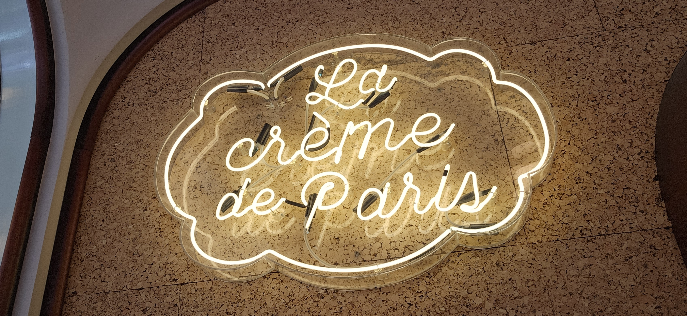
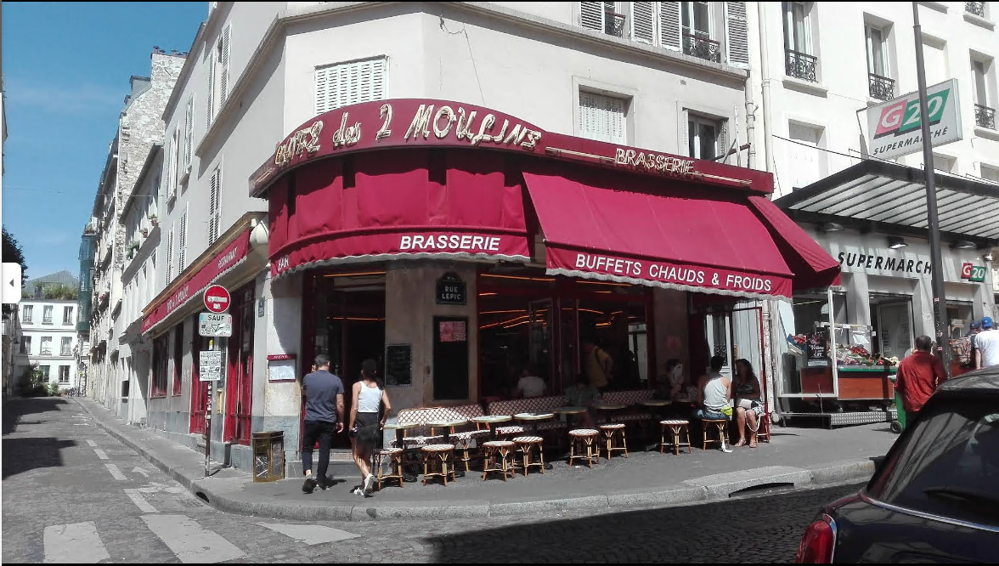
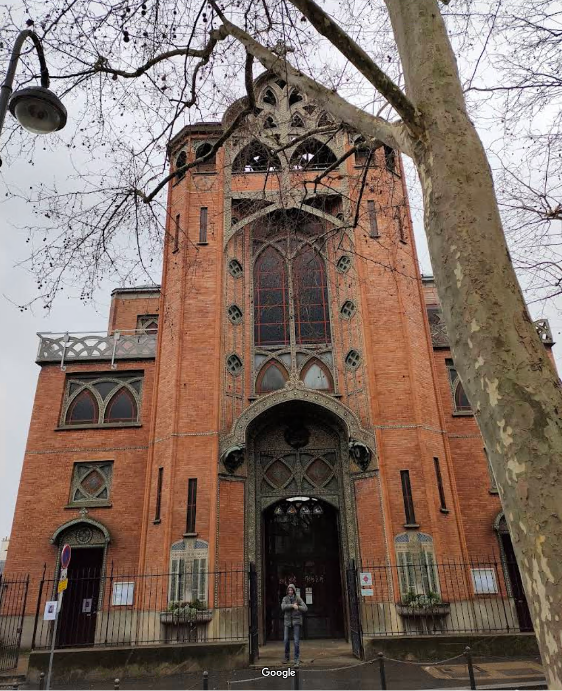
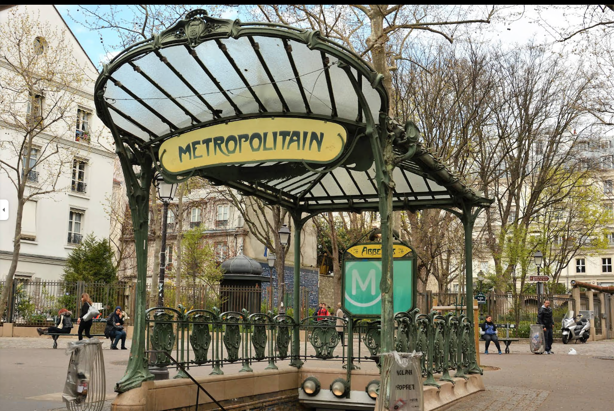
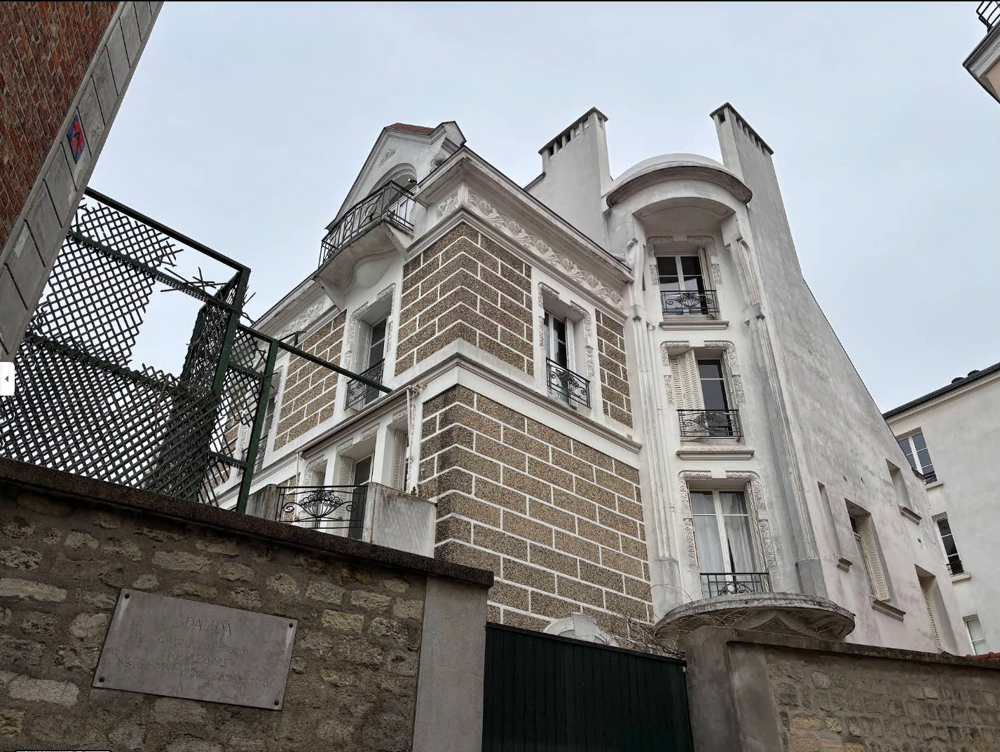
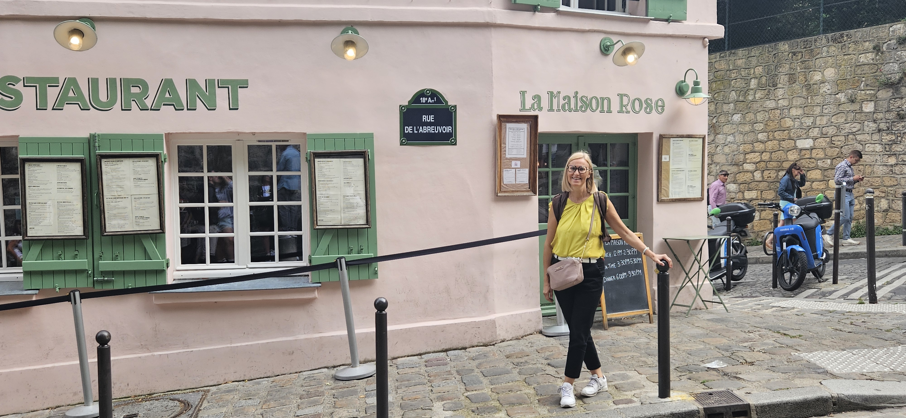
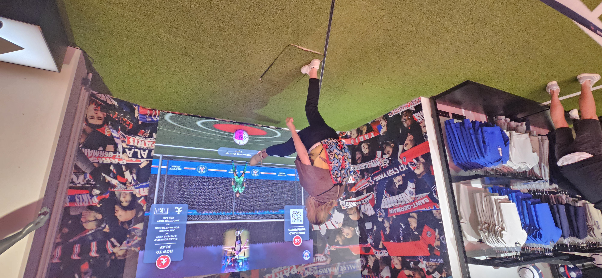

Visita Culturale a Parigi
Metadati della Visita
- Titolo: Gita Culturale a Parigi - Tra Monumenti e Arte Contemporanea
- Data: Agosto 2025
- Durata complessiva: 3 giorni (Venerdì 31/7 - Domenica 3/8)
- Luogo: Parigi, Francia
- Partecipanti: Dario e Daniela e Giulio
Indice
1. Venerdì: da Île de la Cité alla Tour Eiffel
- Île de la Cité: Sainte-Chapelle, Tribunal pour Enfants, Conciergerie
- Passeggiata lungo la Senna: Pont Neuf, Pont au Change, Pont Notre-Dame
- Rive Destra: Tour Saint-Jacques, Hôtel de Ville, Pont d’Arcole
- Île Saint-Louis: Architettura del XVII secolo e Place Louis Aragon
- Notre-Dame: Cattedrale e Crème de Paris (sosta gastronomica)
- Palazzo del Louvre: Storia completa dalle origini medievali all’era moderna
- Percorso in bicicletta: Dal Louvre alla Torre Eiffel lungo la Senna
- Pont Alexandre III: Invalides e monumenti panoramici
- Torre Eiffel e Trocadéro: Vista spettacolare dal Palais de Chaillot
- Verso Montmartre: Métro Blanche e Moulin Rouge (conclusione serale)
2. Sabato: Montmartre, PSG e Quartiere Latino
Mattina: Esplorazione Completa di Montmartre con Marco
- Place Blanche: Incontro con la guida Marco (09:00)
- Rue Lepic: Arteria storica con architettura haussmanniana
- Café des Deux Moulins: Location del film “Il favoloso mondo di Amélie”
- Appartamento di van Gogh: Rue Lepic 54, periodo parigino dell’artista
- Place des Abbesses: Muro dell’Amore (Je t’aime) e stazione Art Nouveau
- Bateau-Lavoir: Laboratorio di Picasso e nascita del Cubismo
- Casa di Dalida: Rue d’Orchampt, icona della musica francese
- Square Suzanne Buisson: Statua di San Dionigi e martirio di Montmartre
- Rue de l’Abreuvoir: La strada più fotografata di Montmartre
- Busto di Dalida: Place Marcel Aymé, omaggio alla cantante
- Maison Rose: Iconica casa rosa, soggetto di Picasso e Renoir
- Église Saint-Pierre: Chiesa più antica della collina (1147)
- Basilique du Sacré-Cœur: Apoteosi spirituale con vista panoramica
Pomeriggio: Sport e Modernità
- Parc des Princes: Stadio del PSG e architettura sportiva moderna
- PSG Store: Merchandising e cultura calcistica parigina
Sera: Intelletto e Tradizione
- La Sorbona: Università storica (1253) e architettura accademica
- Biblioteca Sainte-Geneviève: Architettura in ferro di Henri Labrouste
- Il Panthéon: Mausoleo neoclassico e grandi personalità francesi
- Jardins du Luxembourg: Giardini di Maria de’ Medici e Palazzo del Senato
3. Domenica: Arc de Triomphe, Champs-Élysées e Cultura
Mattina: Epopea Napoleonica
- Arc de Triomphe: Monument napoleonico, quadrighe e vista panoramica
- Terrazza panoramica: Vista a 360° su Parigi e l’Axe historique
Champs-Élysées: Shopping e Tradizioni
- Storia dell’Avenue: Creazione di André Le Nôtre (1667) e trasformazione Haussmann
- Maison Ladurée: Tempio del macaron e atmosfera Belle Époque
- Louis Vuitton Flagship Store: Palazzo storico e haute maroquinerie
- Galeries Lafayette: Grande magazzino con terrazza panoramica
- Pierre Hermé: Rivoluzione del macaron contemporaneo
- Store internazionali: Hugo Boss, Swarovski
All’Ingresso dei Giardini: I Gemelli dell’Esposizione
- Grand Palais: Architettura ferro e vetro, Grande Verrière e quadrighe
- Petit Palais: Museo delle Belle Arti e peristilio con giardino interno
- Avenue Winston Churchill: Prospettiva monumentale verso Invalides
Conclusione Rilassante
- Pallone Generali: Aerostato vincolato nei Jardins des Tuileries
- Vista panoramica: 150m di altezza, raggio 35km, monitoraggio ambientale
- Jardins des Tuileries: Relax tra sculture di Maillol e sedie storiche
- Arc de Triomphe du Carrousel: Piccolo gioiello napoleonico e Axe historique
4. Altri Luoghi Visitati
- Hôtel de Sully (Marais): Architettura XVII secolo e passaggio segreto
- Via Solferino: Stile haussmanniano caratteristico
- Assemblea Nazionale: Palais Bourbon e storia parlamentare
Tappe del Viaggio
1. Venerdì: da Ile de la Cité alla Tour Eiffel
Timeframe: Venerdì 31 luglio - Giornata completa
09:30 (start)
10h 00m (duration)La prima giornata ha seguito un percorso classico dal cuore storico di Parigi fino al suo simbolo più iconico.
Partendo dall’Île de la Cité con Notre-Dame, abbiamo attraversato il Quartiere Latino, camminato lungo la Senna ammirando i suoi ponti storici, per concludere alla Torre Eiffel al tramonto.
Aneddoto: L’Île de la Cité era completamente diversa nel Medioevo: oltre a Notre-Dame, ospitava oltre 20 chiese e migliaia di abitanti. Napoleone III fece demolire la maggior parte degli edifici medievali per creare gli spazi aperti che vediamo oggi. Il Palais de la Cité era il vero cuore del potere reale francese fino a quando Carlo V non trasferì la residenza al Louvre nel XIV secolo.
Sainte-Chapelle
La Sainte-Chapelle, costruita tra il 1241 e il 1248 per volere di Luigi IX (San Luigi), era la cappella palatina del palazzo reale medievale che sorgeva sull’Île de la Cité.
Faceva parte del complesso del Palais de la Cité, residenza dei re di Francia fino al XIV secolo. Le sue vetrate, alte 15 metri, narrano la storia biblica dall’Antico al Nuovo Testamento in 1.113 scene.
Tribunal pour Enfants
L’edificio che oggi ospita il Tribunal pour Enfants (Tribunale per i Minori) si trova all’interno del complesso del Palais de Justice.
Questa istituzione specializzata nella giustizia minorile rappresenta l’evoluzione moderna del sistema giudiziario francese, mantenendo la tradizione secolare dell’Île de la Cité come centro del potere giudiziario.
Conciergerie
La Conciergerie, antica prigione del palazzo reale, è tristemente famosa per aver ospitato Maria Antonietta prima della sua esecuzione durante la Rivoluzione Francese.
Originariamente era parte del Palais de la Cité e serviva come residenza del “concierge” (governatore) del palazzo. Le sue sale gotiche testimoniano il potere reale medievale. 
Passeggiata lungo la Senna - Pont Neuf e Pont au Change
Dopo la visita alla Conciergerie, abbiamo camminato lungo le banchine della Senna verso il Pont Neuf, il ponte più antico di Parigi nonostante il nome (“Ponte Nuovo”). Costruito tra il 1578 e il 1607 sotto Enrico IV, è il primo ponte parigino costruito senza case sopra, offrendo una vista libera sul fiume. 
Dal Pont Neuf abbiamo attraversato per raggiungere il Pont au Change (“Ponte del Cambio”), che prende il nome dalle botteghe di cambiavalute che vi si trovavano nel Medioevo. L’attuale struttura in pietra risale al 1860 e sostituì il ponte medievale che collegava l’Île de la Cité al quartiere commerciale della riva destra. Questo ponte offre una prospettiva privilegiata sulla Conciergerie e sul complesso del Palais de Justice.
Pont Notre-Dame
Il Pont Notre-Dame, ricostruito più volte nella sua storia, è uno dei ponti più antichi di Parigi. L’attuale struttura in pietra risale al 1919, ma qui sorgeva già un ponte nel XII secolo. Il ponte offre una vista privilegiata sulla facciata orientale di Notre-Dame e collega l’Île de la Cité alla riva destra della Senna.
Aneddoto sui Ponti di Parigi:
Attualmente Parigi conta 37 ponti che attraversano la Senna all’interno dei confini della città. L’ultimo ponte costruito è il Pont Charles de Gaulle (2006), seguito dal Pont Simone de Beauvoir (inaugurato nel 2006), una passerella pedonale e ciclabile che collega la Bibliothèque Nationale de France al Parc de Bercy. Il primo ponte di Parigi fu il Petit Pont (esistente già in epoca romana), ma il Pont Neuf che abbiamo attraversato rimane il più antico ancora esistente nella sua forma originale, nonostante il nome “nuovo”.
Durante la nostra passeggiata abbiamo notato i caratteristici bateaux parisiens che navigano in continuazione sulla Senna: questi battelli turistici possono trasportare fino a 500-800 passeggeri a seconda del modello, offrendo crociere panoramiche che permettono di ammirare i monumenti da una prospettiva unica. Curiosamente, Parigi ha più ponti per chilometro quadrato di qualsiasi altra capitale europea!

Tour Saint-Jacques
La Tour Saint-Jacques, alta 54 metri, è tutto ciò che rimane della chiesa di Saint-Jacques-la-Boucherie, demolita nel 1797. Questa torre gotica flamboyant del XVI secolo è famosa per essere stata un punto di partenza per i pellegrini diretti a Santiago de Compostela. Oggi ospita una stazione meteorologica e offre una vista panoramica su Parigi.

Hôtel de Ville
L’Hôtel de Ville (Municipio di Parigi) è un magnifico esempio di architettura neo-rinascimentale francese. L’edificio attuale fu ricostruito tra il 1874 e il 1882 dopo essere stato distrutto durante la Comune di Parigi nel 1871. La sua facciata elaborata è decorata con 136 statue che rappresentano personalità illustri della storia francese.

Pont d’Arcole
Il Pont d’Arcole, costruito nel 1856, prende il nome dalla battaglia di Arcole dove Napoleone Bonaparte si distinse nel 1796. Questo ponte sospeso collega l’Hôtel de Ville all’Île de la Cité ed è noto per la sua elegante struttura in ferro e per la vista spettacolare che offre su Notre-Dame.
Dal ponte si intravede la Place Louis Aragon sull’Île Saint-Louis, l’isola adiacente all’Île de la Cité.

Île Saint-Louis
L’Île Saint-Louis è una delle perle nascoste di Parigi, un’isola residenziale del XVII secolo che ha mantenuto intatto il suo carattere aristocratico. Originariamente formata da due isolotti separati (Île aux Vaches e Île Notre-Dame), fu unificata e urbanizzata tra il 1614 e il 1664 dall’architetto Louis Le Vau.
L’isola è caratterizzata da:
- Architettura omogenea: Eleganti hôtels particuliers (palazzi privati) in pietra chiara del XVII secolo
- Rue Saint-Louis-en-l’Île: L’arteria principale ricca di boutique, gallerie d’arte e la famosa gelateria Berthillon
- Quai de Bourbon e Quai d’Anjou: Banchine panoramiche con vista sulla Senna e Notre-Dame
- Hôtel Lambert: Uno dei più bei palazzi privati di Parigi, residenza di Voltaire e della marchesa di Pompadour
L’isola ospitò illustri personalità come Charles Baudelaire, Théophile Gautier e Camille Desmoulins. Oggi rimane un quartiere esclusivo e tranquillo, quasi immune al turismo di massa, dove il tempo sembra essersi fermato al Grand Siècle.
Cathédrale Notre-Dame
La Cathédrale Notre-Dame de Paris, capolavoro dell’architettura gotica francese, fu costruita tra il 1163 e il 1345. Nonostante i gravi danni dell’incendio del 15 aprile 2019, la cattedrale rimane un simbolo immortale di Parigi. Le sue torri, i rosoni, i doccioni e la celebre guglia (in ricostruzione) rappresentano otto secoli di storia e fede.
Crème de Paris - Sosta Gastronomica
Dopo la visita a Notre-Dame, ci siamo concessi una deliziosa pausa alla Crème de Paris, una caratteristica creperia parigina famosa per i suoi waffle salati. Il locale, situato nel cuore del quartiere turistico, offre un’esperienza culinaria autentica con waffle preparati al momento e farciti con ingredienti di qualità. Una perfetta combinazione tra la tradizione francese del waffle e l’innovazione gastronomica contemporanea, ideale per riprendere le forze durante l’esplorazione della città.

Palazzo del Louvre
Dopo il pranzo, abbiamo ripreso il nostro itinerario in direzione del Palazzo del Louvre, uno dei monumenti più emblematici di Parigi e testimone di quasi mille anni di storia francese.
Storia del Palazzo del Louvre
Dalle Origini Medievali (XII secolo) Il Louvre nasce come fortezza medievale costruita da Filippo Augusto intorno al 1190 per difendere Parigi dalle invasioni normanne. La struttura originaria era un castello fortificato con un donjon (torre principale) circondato da mura e un fossato. I resti di questa fortezza sono ancora visibili nelle fondamenta dell’attuale museo.
Trasformazione in Residenza Reale (XIV-XVI secolo) Nel 1364, Carlo V trasformò la fortezza in residenza reale, abbandonando l’Île de la Cité. Il castello divenne il centro del potere monarchico francese. Francesco I (1515-1547) diede avvio alla grande trasformazione rinascimentale, demolendo il donjon medievale e iniziando la costruzione del palazzo moderno sotto la direzione dell’architetto Pierre Lescot.
L’Era di Luigi XIV e l’Espansione (XVII secolo) Luigi XIV ampliò significativamente il complesso, creando la Grande Galerie che collega il Louvre alle Tuileries (1595-1610). Tuttavia, nel 1682, il Re Sole trasferì definitivamente la corte a Versailles, lasciando il Louvre parzialmente abbandonato ma continuando i lavori architettonici.
Dalla Rivoluzione al Museo (XVIII-XIX secolo) Durante la Rivoluzione Francese (1793), il Louvre fu trasformato in museo pubblico. Napoleone I lo ribattezzò “Musée Napoléon” e arricchì enormemente le collezioni con le opere conquistate durante le campagne militari. Napoleone III completò il progetto del “Grand Louvre” collegando definitivamente tutti gli edifici.
L’Era Moderna (XX-XXI secolo) La trasformazione più rivoluzionaria avvenne sotto François Mitterrand con il progetto del “Grand Louvre” (1981-1999). L’architetto Ieoh Ming Pei progettò la famosa Piramide di vetro (inaugurata nel 1989), creando un nuovo ingresso che combina modernità e tradizione. Oggi il Louvre è il museo più visitato al mondo con oltre 9 milioni di visitatori annui.
Curiosità Architettonica: Il Louvre attuale copre 72.735 m² e le sue collezioni spaziano dall’antichità al 1848. La Gioconda di Leonardo da Vinci rimane l’opera più famosa, ma il museo custodisce oltre 35.000 opere esposte tra le sue 403 sale.


Percorso in Bicicletta lungo la Senna - Dal Louvre alla Tour Eiffel
Dopo aver esplorato il Palazzo del Louvre, abbiamo concluso la nostra giornata con un percorso in bicicletta lungo la Senna, un modo ideale per ammirare Parigi da una prospettiva diversa e raggiungere la Torre Eiffel al tramonto.
Il Tragitto Ciclistico
Partenza: Dalle Tuileries adiacenti al Louvre, abbiamo imboccato le piste ciclabili lungo la Senna, parte del progetto “Paris Respire” che ha trasformato le banchine del fiume in spazi pedonali e ciclabili durante i weekend.
Percorso panoramico: Pedalando lungo il Quai des Tuileries e successivamente il Quai d’Orsay, abbiamo goduto di viste spettacolari sui monumenti che si affacciano sulla Senna. Il percorso ciclistico di circa 4 chilometri ci ha permesso di attraversare il cuore di Parigi ammirando:
- Pont Alexandre III: Il ponte più decorato di Parigi con le sue statue dorate
- Invalides: La maestosa cupola dorata che ospita la tomba di Napoleone
- Assemblea Nazionale: Il Palais Bourbon sede del parlamento francese
- Pont de la Concorde: Vista sulla Place de la Concorde e l’Obelisco
L’Arrivo alla Tour Eiffel
Il percorso si conclude spettacolarmente con l’apparizione graduale della Torre Eiffel, che si staglia sempre più imponente all’orizzonte. Arrivando al Champ de Mars proprio al tramonto, abbiamo potuto ammirare la torre nella sua luce dorata, momento perfetto per concludere una giornata ricca di storia e cultura.
Aneddoto Ciclistico: Parigi ha oltre 1.000 km di piste ciclabili e il sistema Vélib’ con più di 20.000 biciclette disponibili in 1.800 stazioni. Le banchine della Senna sono state pedonalizzate definitivamente nel 2016, creando uno dei percorsi urbani più belli d’Europa per ciclisti e pedoni.
Dal Trocadéro - La Vista più Spettacolare
Dopo aver ammirato la Torre Eiffel dal Champ de Mars, abbiamo attraversato il Pont de Bir-Hakeim (spesso chiamato Pont d’Iéna dalla gente del posto) per raggiungere il Palais de Chaillot al Trocadéro, dove si gode indiscutibilmente la vista più bella e panoramica della Torre Eiffel.
Il Palais de Chaillot e le Terrazze del Trocadéro
Il Palais de Chaillot, costruito per l’Esposizione Universale del 1937, sostituì il precedente Palazzo del Trocadéro (1878). Le sue terrazze panoramiche offrono una vista frontale perfetta sulla Torre Eiffel, creando l’inquadratura fotografica più iconica di Parigi.
La prospettiva perfetta: Dalle terrazze del Trocadéro, la Torre Eiffel si erge in tutta la sua maestosità di 324 metri, incorniciata dai Jardins du Trocadéro con le loro fontane che creano giochi d’acqua spettacolari, specialmente illuminate al tramonto. È il punto di osservazione preferito dai fotografi di tutto il mondo.
Aneddoto del Trocadéro: Il nome “Trocadéro” deriva dalla battaglia di Trocadero (1823) in Spagna, vinta dalle truppe francesi. Le terrazze del Chaillot sono anche famose per essere state il palcoscenico di eventi storici, come la proclamazione della Dichiarazione Universale dei Diritti dell’Uomo da parte dell’ONU nel 1948, proprio di fronte alla Torre Eiffel illuminata.
Verso Montmartre - Fine della Prima Giornata
Con il tramonto che illumina la Torre Eiffel, è giunto il momento di dirigerci verso il nostro albergo nel quartiere Montmartre, che esploreremo domani. Prendiamo la metropolitana parigina per raggiungere questo storico quartiere artistico.
Métro fino a Blanche - Fermata al Moulin Rouge
Dalla stazione Bir-Hakeim vicino al Trocadéro, prendiamo la Linea 6 fino a Charles de Gaulle-Étoile, poi cambiamo con la Linea 2 fino alla fermata Blanche. Questo tragitto di circa 20 minuti ci porta direttamente nel cuore di Montmartre, nel famoso quartiere di Pigalle.
Scoperta serale del Moulin Rouge: Appena usciti dalla stazione Blanche, ci troviamo di fronte al leggendario Moulin Rouge, il cabaret più famoso al mondo con le sue pale rosse illuminate. Costruito nel 1889 da Joseph Oller e Charles Zidler, il Moulin Rouge è diventato simbolo della Belle Époque parigina e della vita notturna di Montmartre.
La facciata del locale, con il suo caratteristico mulino a vento rosso, si illumina spettacolarmente al crepuscolo, offrendo l’opportunità perfetta per una foto ricordo che cattura l’essenza della Parigi by night.
Aneddoto del Moulin Rouge: Il celebre cabaret fu immortalato dai dipinti di Henri de Toulouse-Lautrec, che frequentava assiduamente il locale e ne ritrasse ballerine e artisti. Il French Cancan, la danza caratteristica del Moulin Rouge, fu creata proprio qui e divenne simbolo di libertà e trasgressione nella Parigi di fine Ottocento.

Fine della Prima Giornata: Dopo questa suggestiva conclusione, raggiungiamo il nostro albergo a Montmartre, pronti per esplorare domani questo quartiere bohémien ricco di storia artistica e panorami mozzafiato su Parigi.
2. Sabato: Montmartre, Stade Roland Garros e Quartiere Latino
Timeframe: Sabato 1 agosto - Giornata completa
09:00 (start)
11h 00m (duration)Seconda giornata dedicata alla scoperta di Montmartre con la Basilica del Sacré-Cœur, visita allo storico Stade Roland Garros, esplorazione approfondita del Quartiere Latino, visita al Panthéon e relax nei giardini del Luxembourg.
Aneddoto: Montmartre deve il suo nome al “Monte dei Martiri” dove San Dionigi fu decapitato. La leggenda narra che dopo la decapitazione, il santo raccolse la sua testa e camminò per sei chilometri predicando, fino al luogo dove ora sorge la Basilica di Saint-Denis.
Incontro con Marco - Place Blanche (09:00)
La seconda giornata inizia proprio dove avevamo concluso la sera precedente: alla stazione Place Blanche, di fronte al leggendario Moulin Rouge. Qui incontriamo Marco, la nostra guida locale specializzata nella storia di Montmartre, che ci accompagnerà alla scoperta di questo quartiere bohémien ricco di arte e tradizioni.
Marco, con la sua profonda conoscenza del quartiere e delle sue leggende, ci accoglie con un sorriso.
Ci racconta come Montmartre, in passato, fosse un villaggio indipendente situato su una collina fuori Parigi, annesso alla città solo nel 1860 durante i grandi lavori di ristrutturazione urbana del barone Haussmann.
Lo Stile Haussmanniano: È proprio al barone Georges-Eugène Haussmann (1809-1891), prefetto della Senna sotto Napoleone III dal 1853 al 1870, che si deve il nome dello “stile haussmanniano” caratteristico di Parigi. Haussmann trasformò radicalmente la capitale francese con i suoi grandi boulevard rettilinei, gli edifici in pietra chiara di 6-7 piani con balconi in ferro battuto al secondo e quinto piano, le mansarde tipiche e le facciate uniformi che conferiscono a Parigi la sua identità architettonica unica al mondo.

Curiosità di Montmartre: Marco ci spiega che la collina di Montmartre, alta 130 metri, è la seconda elevazione naturale di Parigi dopo la Butte Bergeyre.
Nel XIX secolo era famosa per i suoi mulini a vento (ne esistevano oltre 30), di cui oggi rimangono solo il Moulin Rouge e il Moulin de la Galette.
Con Marco iniziamo la nostra ascesa verso la Basilica del Sacré-Cœur, attraversando le caratteristiche stradine acciottolate che hanno ispirato artisti come Picasso, Renoir, Toulouse-Lautrec e molti altri che abitarono e lavorarono in questo quartiere bohémien all’inizio del XX secolo.
Rue Lepic - L’Arteria Storica di Montmartre
Da Place Blanche ci dirigiamo lungo la celebre Rue Lepic, una delle strade più caratteristiche e storiche di Montmartre. Questa strada serpeggiante, che prende il nome dal generale napoleonico Louis Lepic (1765-1827), ci conduce attraverso il cuore del quartiere bohémien, offrendo scorci autentici della vita parigina.
Storia di Rue Lepic: Originariamente chiamata “Chemin des Brouillards” (Sentiero delle Nebbie), la strada fu rinominata in onore del generale Lepic durante il periodo haussmanniano. Lungo i suoi 400 metri di lunghezza, la via ospitò residenze e atelier di numerosi artisti celebri, mantenendo ancora oggi il suo carattere pittoresco con botteghe tradizionali, bistrot autentici e l’atmosfera bohémien che rese famoso Montmartre.
Café des Deux Moulins - Sosta Cinematografica
Durante la nostra passeggiata lungo Rue Lepic, facciamo una sosta imperdibile al famoso Café des Deux Moulins, situato al numero 15 della strada. Questo caratteristico bistrot parigino è diventato celebre in tutto il mondo grazie al film “Il favoloso mondo di Amélie” (2001) di Jean-Pierre Jeunet, dove la protagonista Audrey Tautou lavorava come cameriera.

L’Atmosfera di Amélie: Il café conserva ancora oggi l’arredamento originale del film: i tipici tavoli in formica verde, le sedie in paglia, i lampadari vintage e l’atmosfera retrò che ha conquistato milioni di spettatori. Marco ci racconta come il locale sia diventato un vero pellegrinaggio cinematografico, visitato quotidianamente da turisti che cercano di rivivere la magia del film.
Curiosità Cinematografica: Il nome “Deux Moulins” (Due Mulini) deriva dai due mulini storici che si trovavano nelle vicinanze: il Moulin Rouge e il Moulin de la Galette. Sebbene il film abbia reso il café internazionalmente famoso, esso mantiene il suo carattere di bistrot de quartier autentico, frequentato anche dai residenti locali di Montmartre.
L’Appartamento dei Fratelli van Gogh
Proseguendo lungo Rue Lepic, Marco ci indica uno dei luoghi più significativi per la storia dell’arte: l’appartamento al numero 54 dove vissero i fratelli Vincent e Theo van Gogh dal giugno 1886 al febbraio 1888. Questo periodo parigino fu cruciale per l’evoluzione artistica di Vincent, che qui scoprì l’impressionismo e il post-impressionismo.
Il Periodo Parigino di Vincent: Durante i due anni trascorsi a Montmartre, Vincent van Gogh dipinse oltre 200 opere, trasformando radicalmente il suo stile. Abbandonò i toni scuri del periodo olandese per abbracciare i colori vivaci dell’impressionismo francese. In questo appartamento creò celebri autoritratti e vedute di Montmartre, tra cui “Vista da Montmartre” e “Mulini a vento di Montmartre”.
Theo van Gogh, il Fratello Marchante: Theo, mercante d’arte presso la galleria Boussod & Valadon (successore di Goupil & Cie), sostenne economicamente Vincent per tutta la vita. Il loro appartamento in Rue Lepic divenne un punto di incontro per artisti come Émile Bernard, Henri de Toulouse-Lautrec e Paul Gauguin, creando un vero cenacolo artistico nel cuore di Montmartre.
Eredità Artistica: Marco ci racconta come questo periodo parigino abbia influenzato definitivamente l’arte di Vincent, preparandolo per i capolavori che avrebbe creato ad Arles e Saint-Paul-de-Mausole. Oggi una targa commemorativa ricorda il soggiorno dei fratelli van Gogh in questa casa che ha fatto la storia dell’arte mondiale.
Place des Abbesses - Il Muro dell’Amore
Dopo la pausa al Café des Deux Moulins, continuiamo la nostra ascesa lungo Rue Lepic fino a raggiungere la suggestiva Place des Abbesses, una delle piazze più caratteristiche e romantiche di Montmartre. Questa piccola piazza, che prende il nome dall’antica Abbazia delle Dame di Montmartre (fondata nel 1133), ospita uno dei simboli d’amore più famosi al mondo.

Il Mur des Je t’aime (Muro dell’Amore): Nel giardino Square Jehan Rictus, adiacente alla piazza, si trova il celebre “Mur des Je t’aime”, creato nel 2000 dall’artista Frédéric Baron e dalla calligrafa Claire Kito. Questo muro di 40 m² riporta la frase “Ti amo” scritta in più di 300 lingue e dialetti diversi, rappresentando un messaggio universale di pace e amore.

L’Opera d’Arte: Il muro è composto da 612 piastrelle di porcellana smaltata blu scuro su cui sono incise 1.500 volte le parole “Ti amo” in caratteri bianchi e rossi. Le macchie rosse sparse sulla superficie rappresentano i frammenti di un cuore spezzato, simboleggiando l’umanità divisa che trova unità nell’amore universale.
Curiosità Linguistiche: Marco ci mostra come individuare “Ti amo” in diverse lingue: dall’italiano “Ti amo”, al francese “Je t’aime”, dall’inglese “I love you”, al giapponese “愛してる” (Aishiteru), dal cinese “我爱你” (Wo ai ni), dall’arabo “أحبك” (Uhibbuka). Il progetto nacque dall’idea di Baron di raccogliere tutte le espressioni d’amore del mondo dopo aver sentito suo fratello sussurrare “Je t’aime” alla fidanzata.
La Stazione Art Nouveau: Nella piazza ammiriamo anche l’ingresso della metropolitana Abbesses, uno dei due ingressi originali Art Nouveau di Hector Guimard rimasti a Parigi (l’altro si trova a Porte Dauphine). Questo capolavoro del 1900, con le sue caratteristiche forme organiche e la scritta “Métropolitain”, è stato dichiarato monumento storico nel 1978.
Curiosità sulla Profondità: La stazione Abbesses è la stazione della metropolitana più profonda di Parigi, situata a 36 metri sotto il livello stradale. Questa profondità eccezionale è dovuta alla necessità di scavare sotto la collina di Montmartre per raggiungere un terreno stabile. Per questo motivo, la stazione è dotata di due ascensori e di una scala elicoidale di 285 gradini che pochi turisti osano affrontare a piedi!

Aneddoto Romantico: La Place des Abbesses è diventata meta di pellegrinaggio per innamorati di tutto il mondo. Molte coppie vengono qui per scattare foto davanti al Muro dell’Amore e per toccare le scritte nella propria lingua, credendo che questo gesto porti fortuna al loro rapporto. Marco ci racconta che ogni giorno decine di proposte di matrimonio avvengono davanti a questo muro, rendendolo uno dei luoghi più romantici di Parigi.
Verso il Bateau-Lavoir - Culla dell’Arte Moderna
Lasciando la romantica Place des Abbesses, Marco ci guida attraverso le stradine caratteristiche di Montmartre verso uno dei luoghi più significativi per la storia dell’arte moderna: il Bateau-Lavoir. Questo percorso ci porta attraverso Rue Ravignan e Place Émile Goudeau, immergendoci completamente nell’atmosfera bohémien che rese famoso il quartiere all’inizio del XX secolo.
Il Cammino verso la Leggenda: Mentre saliamo verso la Place Émile Goudeau, Marco ci racconta come queste stradine abbiano visto passare quotidianamente i più grandi artisti del Novecento. Il percorso stesso è un viaggio nel tempo, tra case d’artista, piccoli bistrot e scorci pittoreschi che sembrano usciti da un dipinto impressionista.
Il Bateau-Lavoir - La Factory dell’Arte Moderna
Arriviamo finalmente al celebre Bateau-Lavoir, situato al 13 di Place Émile Goudeau. Questo edificio, che deve il suo nome alla sua forma che ricordava i battelli-lavatoi della Senna, è considerato la culla dell’arte moderna e il luogo di nascita del movimento cubista.

Gli Anni Eroici (1904-1909): Il Bateau-Lavoir ospitò negli atelier più spartani alcuni dei nomi più illustri dell’arte mondiale. Pablo Picasso vi si stabilì nel 1904 nell’atelier numero 7, dove dipinse le celebri “Demoiselles d’Avignon” (1907), opera considerata l’atto di nascita del cubismo. Qui lavorarono anche Georges Braque, Juan Gris, Amedeo Modigliani, e il poeta Guillaume Apollinaire. 
La Vita Bohémien: Marco ci descrive le condizioni spartane in cui vivevano questi artisti: atelier freddi d’inverno, senza acqua corrente, illuminati solo da lucernari. Nonostante le difficoltà economiche, il Bateau-Lavoir divenne un laboratorio creativo dove nacquero le avanguardie artistiche che avrebbero rivoluzionato l’arte del XX secolo.
L’Incendio e la Ricostruzione: L’edificio originale fu distrutto da un incendio nel 1970, ma è stato ricostruito nel 1978 mantenendo l’aspetto esteriore originale. Oggi ospita ancora atelier d’artista, continuando la tradizione creativa del luogo.
Curiosità Storica: Il nome “Bateau-Lavoir” fu coniato dal poeta Max Jacob per la forma dell’edificio e i rumori che produceva quando gli artisti camminavano sui pavimenti di legno, che ricordavano il dondolio di un battello. Qui, in condizioni di estrema povertà, nacque un movimento artistico che avrebbe cambiato per sempre la percezione dell’arte mondiale.
Verso il Moulin de la Galette - Rue d’Orchampt e la Maison de Dalida
Lasciando il Bateau-Lavoir, Marco ci guida attraverso le stradine caratteristiche di Montmartre verso il Moulin de la Galette, uno degli ultimi mulini a vento storici di Parigi. Il nostro percorso ci porta attraverso la pittoresca Rue d’Orchampt, una delle strade più affascinanti e meno turistiche del quartiere.

Rue d’Orchampt - L’Eleganza Nascosta: Questa strada residenziale, che serpeggia lungo il versante nord di Montmartre, è caratterizzata da ville e cottage in stile anglo-normanno costruiti negli anni ’20 e ’30. L’atmosfera è quella di un villaggio di campagna nel cuore di Parigi, con giardini privati, cancelletti in ferro battuto e un’architettura che si discosta completamente dallo stile haussmanniano del resto della città.
La Maison de Dalida - Il Santuario della Diva
Al numero 11 bis di Rue d’Orchampt si trova la casa di Dalida (1933-1987), la celebre cantante franco-italiana che visse qui per oltre vent’anni fino alla sua tragica morte. La villa, nascosta da una vegetazione rigogliosa, divenne il rifugio privato dell’artista che vendette oltre 170 milioni di dischi in tutto il mondo.

La Diva di Montmartre: Iolanda Cristina Gigliotti, questo il vero nome di Dalida, scelse Montmartre come sua dimora parigina dal 1962. La casa divenne teatro delle sue gioie e dei suoi dolori, ospitando feste memorabili ma anche i momenti più difficili della sua vita privata. Marco ci racconta come Dalida amasse passeggiare per le stradine del quartiere, spesso riconosciuta e salutata affettuosamente dai residenti.
Il Legame con Montmartre: Dalida considerava Montmartre la sua “montagna magica”, un luogo dove poteva vivere lontano dal clamore del successo. La cantante, che parlava perfettamente sette lingue (italiano, francese, arabo, inglese, tedesco, spagnolo e giapponese), trovava in questo quartiere bohémien l’ispirazione per le sue canzoni e la serenità per la sua anima tormentata.
Il Mito e la Memoria: Oggi la casa rimane proprietà privata, ma la zona è diventata meta di pellegrinaggio per i fan di tutto il mondo. Nel 1997, a dieci anni dalla morte, fu eretta una statua in bronzo di Dalida in Place Dalida (poco distante), dove i fan lasciano fiori e messaggi d’amore. La scultura, opera di Aslan Alain Bourdain, rappresenta l’artista in una posa elegante con il suo caratteristico sorriso.
Aneddoto Musicale: Marco ci rivela che molte delle canzoni più famose di Dalida, come “Bambino”, “Il Silenzio” e “Gigi l’Amoroso”, furono composte o perfezionate proprio in questa casa di Rue d’Orchampt. La villa aveva un pianoforte a coda dove l’artista amava esercitarsi e sperimentare nuove melodie, spesso fino a tarda notte.
Square Suzanne Buisson - San Dionigi e il Martirio di Montmartre
Prima di dirigerci verso Rue de l’Abreuvoir, Marco ci conduce attraverso il suggestivo Square Suzanne Buisson, un piccolo giardino pubblico che nasconde uno dei monumenti più significativi per comprendere le origini cristiane di Montmartre. Questo spazio verde, dedicato alla Resistente francese Suzanne Buisson (1883-1946), ospita una delle statue più impressionanti e cariche di storia sacra di tutto il quartiere.
La Statua di Saint Denis - Il Patrono Decapitato
Al centro del giardino si erge la statua di Saint Denis (San Dionigi), primo vescovo di Parigi e patrono della Francia, rappresentato nel momento più drammatico del suo martirio. La scultura, opera dello scultore Hippolyte Lefèbvre (1895), raffigura il santo con la propria testa decapitata tenuta tra le mani, una delle iconografie più potenti e inquietanti dell’arte sacra cristiana.
La Leggenda del Martirio: Marco ci racconta la straordinaria leggenda di Saint Denis (Denis de Paris), martirizzato intorno al 250 d.C. durante le persecuzioni dell’imperatore romano Decio. Secondo la tradizione, dopo essere stato decapitato proprio sulla collina di Montmartre insieme ai suoi compagni Eleuthère e Rustique, il santo raccolse miracolosamente la sua testa e camminò per sei chilometri predicando, fino al luogo dove desiderava essere sepolto e dove oggi sorge la Basilica di Saint-Denis.
Il Nome di Montmartre: Questa leggenda spiega l’origine del nome “Montmartre”, che deriva dal latino “Mons Martyrum” (Monte dei Martiri). La collina divenne così il luogo sacro dove iniziò la cristianizzazione di Parigi, trasformando quello che era un sito di culto pagano gallo-romano dedicato al dio Mercurio in un simbolo della fede cristiana.
L’Arte della Cefaloforia: La rappresentazione di Saint Denis che porta la propria testa è chiamata “cefaloforia” e costituisce un soggetto artistico unico nell’iconografia cristiana. Marco ci spiega come questa immagine simboleggi la vittoria della fede sulla morte e la capacità dello spirito di trascendere la distruzione fisica. La statua di Lefèbvre cattura magistralmente questo momento mistico, con il santo che cammina serenamente nonostante la decapitazione.
Il Luogo del Martirio: Secondo la tradizione, il martirio di Saint Denis avvenne esattamente nel luogo dove oggi sorge la Basilica del Sacré-Cœur, che raggiungeremo a breve. Questo legame tra il sacrificio del primo vescovo di Parigi e la moderna basilica votiva crea un ponte simbolico tra la Parigi cristiana delle origini e quella contemporanea.
Curiosità Storica: Saint Denis non è solo il patrono di Parigi ma dell’intera Francia. Il grido di guerra dei re francesi era “Montjoie Saint Denis!”, invocando la protezione del santo martire. La Basilica di Saint-Denis, costruita nel luogo della sua sepoltura, divenne la necropoli reale francese, ospitando le tombe di quasi tutti i re di Francia da Dagoberto I a Luigi XVIII.
L’Eredità Spirituale: Marco ci fa notare come il Square Suzanne Buisson rappresenti perfettamente la stratificazione storica di Montmartre: da sito pagano a luogo di martirio cristiano, da villaggio rurale a quartiere artistico, mantenendo sempre un carattere spirituale e trascendente che attira pellegrini, artisti e visitatori da tutto il mondo.
Rue de l’Abreuvoir - La Strada più Fotografata di Montmartre
Continuando il nostro percorso verso il Moulin de la Galette, Marco ci conduce attraverso la celebre Rue de l’Abreuvoir, considerata una delle strade più belle e fotografate di tutto Montmartre. Questa piccola via acciottolata, il cui nome significa “strada dell’abbeveratoio”, evoca l’epoca in cui Montmartre era ancora un villaggio rurale e qui si abbeveravano gli animali.

L’Atmosfera da Cartolina: La Rue de l’Abreuvoir conserva perfettamente l’atmosfera della Montmartre d’epoca, con le sue case basse dai colori pastello, i giardini nascosti dietro cancelletti di ferro battuto, e le vigne che ancora oggi crescono sui versanti della collina. Camminando sui suoi sampietrini irregolari, si ha la sensazione di essere tornati indietro nel tempo, quando artisti come Maurice Utrillo immortalavano queste stradine nei loro dipinti.

L’Eredità Artistica: Questa strada fu dimora e fonte d’ispirazione per numerosi artisti del XIX e XX secolo. Le piccole case con i loro giardini segreti ospitarono pittori, musicisti e scrittori che trovavano qui la tranquillità necessaria per la loro arte, lontano dal caos della città che si estendeva ai piedi della collina.
Il Busto di Dalida - Place Marcel Aymé
Al termine di Rue de l’Abreuvoir, nella piccola Place Marcel Aymé (dedicata al celebre scrittore francese), ci imbattiamo nel busto commemorativo di Dalida, una delle attrazioni più visitate di Montmartre. Questo busto in bronzo, inaugurato nel 1997 nel decimo anniversario della sua morte, è diventato un vero luogo di pellegrinaggio per i fan di tutto il mondo.
L’Opera Commemorativa: Il busto, realizzato dallo scultore Aslan Alain Bourdain, ritrae Dalida con il suo inconfondibile sorriso e la caratteristica pettinatura degli anni ’70. L’opera cattura l’essenza dell’artista nel momento della sua massima fama, quando dominava le classifiche europee e internazionali con hits come “Gigi l’Amoroso” e “Monday Tuesday”.
Il Rituale dei Fan: Marco ci racconta di una tradizione curiosa: migliaia di fan ogni anno vengono qui per toccare il seno del busto, credendo che questo gesto porti fortuna in amore. Nel corso degli anni, questa zona del bronzo si è lucidată per il continuo contatto, creando un contrasto visibile con il resto della scultura. I fan lasciano anche fiori, biglietti d’amore e piccoli omaggi ai piedi del monumento.
Dalida e Montmartre: La scelta di questa ubicazione non è casuale. Place Marcel Aymé si trova a pochi passi dalla casa di Dalida in Rue d’Orchampt e lungo uno dei percorsi che la cantante amava fare durante le sue passeggiate quotidiane nel quartiere. Da qui si gode anche una vista panoramica su Parigi, la città che adottò la giovane Iolanda Gigliotti trasformandola in Dalida, una delle voci più amate del XX secolo.
Curiosità Linguistica: Il busto riporta la scritta “Dalida 1933-1987” e spesso i visitatori notano come questa semplice iscrizione racchiuda una vita straordinaria che ha attraversato culture, lingue e continenti. Dalida infatti cantò in sette lingue diverse, vendendo oltre 170 milioni di dischi e diventando un’icona mondiale partita dall’Egitto per conquistare il cuore di Parigi.
La Maison Rose - L’Icona di Montmartre
Proseguendo la nostra passeggiata attraverso le stradine di Montmartre, arriviamo finalmente alla celebre Maison Rose, situata all’angolo tra Rue de l’Abreuvoir e Rue des Saules. Questo piccolo ristorante dalle pareti rosa shocking è diventato uno dei simboli più fotografati di tutto Montmartre e una tappa obbligata per chiunque visiti il quartiere.

Storia della Maison Rose: La Maison Rose deve il suo nome e la sua fama al colore caratteristico delle sue pareti, dipinte di rosa sin dal 1908. Originariamente chiamata “Cabaret de la Consigne”, il locale fu trasformato dalla sua proprietaria Germaine Gargallo, modella e musa di Pablo Picasso durante il suo periodo del “Periodo Rosa” (1904-1906). La donna decise di dipingere l’edificio dello stesso colore che Picasso utilizzava nei suoi dipinti di quel periodo.
L’Epoca d’Oro: Durante la Belle Époque e negli anni ’20, la Maison Rose divenne il ritrovo preferito degli artisti di Montmartre. Tra i suoi clienti abituali si contavano Pablo Picasso, Georges Braque, Henri de Toulouse-Lautrec, Maurice Utrillo (che la immortalò in numerosi dipinti), Suzanne Valadon e molti altri protagonisti dell’avanguardia artistica parigina.
Maurice Utrillo e la Maison Rose: Maurice Utrillo (1883-1955), figlio della pittrice Suzanne Valadon, dipinse la Maison Rose in almeno una dozzina di quadri tra il 1912 e il 1914, durante il suo celebre “Periodo Bianco”. I suoi dipinti catturavano l’atmosfera malinconica e poetica di Montmartre, e la Maison Rose divenne uno dei suoi soggetti preferiti, rappresentando l’anima bohémien del quartiere.
L’Atmosfera Autentica: Marco ci racconta come la Maison Rose sia riuscita a mantenere il suo carattere autentico nonostante il turismo di massa. Il locale conserva ancora oggi l’arredamento d’epoca, con le sue sedie di paglia, i tavoli di legno usurato dal tempo, le fotografie in bianco e nero degli artisti che lo frequentavano, e naturalmente le sue iconiche pareti rosa che sembrano brillare sotto il sole di Montmartre.
Curiosità Gastronomica: Oltre alla sua importanza storica e artistica, la Maison Rose è anche famosa per la sua cucina tradizionale francese. Il ristorante propone piatti tipici della bistrotteria parigina: coq au vin, bouillabaisse, escargots e i celebri crêpes suzette che vengono flambé direttamente al tavolo. Marco ci suggerisce di provare il loro “Menu des Artistes”, un omaggio culinario agli artisti che hanno reso famoso il locale.
Il Fenomeno Instagram: Negli ultimi anni, la Maison Rose è diventata una delle location più “instagrammate” di Parigi. Migliaia di turisti ogni giorno si fotografano davanti alla sua facciata rosa, spesso creando lunghe code. Tuttavia, Marco ci consiglia di visitarla al mattino presto o al tramonto, quando la luce naturale esalta il colore delle pareti e l’atmosfera è più autentica e rilassata.
Rue de Mont-Cenis e i Vicoli degli Artisti
Lasciando la celebre Maison Rose, Marco ci conduce attraverso la Rue de Mont-Cenis, una delle arterie storiche che ci porta verso la sommità della collina di Montmartre. Questa strada, che prende il nome dall’antico Monte Cenisio (riferimento alle montagne alpine), ci offre l’opportunità di attraversare i caratteristici vicoli degli artisti che hanno reso famoso questo quartiere bohémien.

L’Atmosfera dei Vicoli: Mentre saliamo attraverso questi stretti passaggi acciottolati, Marco ci racconta come questi vicoli siano stati teatro della vita quotidiana degli artisti di Montmartre per oltre un secolo. Ogni angolo, ogni scalinata, ogni piccola piazzetta ha visto passare pittori con i loro cavalletti, poeti con i loro quaderni, musicisti con i loro strumenti, creando un’atmosfera unica al mondo.
I Pittori di Strada: Ancora oggi, lungo questi vicoli, è possibile incontrare artisti di strada che dipingono ritratti ai turisti o espongono le loro opere sui muri antichi. Marco ci spiega come questa tradizione sia sopravvissuta dal XIX secolo, quando artisti squattrinati come Picasso e Renoir vendevano i loro quadri per strada per sopravvivere.
Architettura del Villaggio: I vicoli conservano l’architettura tipica del villaggio di Montmartre pre-haussmanniano: case basse con facciate irregolari, cortili nascosti, passaggi segreti tra un edificio e l’altro. Marco ci indica come molte di queste strutture risalgano al XVIII secolo, quando Montmartre era ancora un borgo rurale fuori dalle mura di Parigi.
Église Saint-Pierre de Montmartre - La Chiesa più Antica della Collina
Al termine della nostra salita attraverso i vicoli, arriviamo alla Église Saint-Pierre de Montmartre, una delle chiese più antiche di Parigi e il cuore spirituale originario della collina sacra. Questa piccola chiesa, spesso oscurata dalla vicinanza con la maestosa Basilica del Sacré-Cœur, rappresenta in realtà la continuità storica tra la Montmartre medievale e quella contemporanea.

Storia Millenaria: La Église Saint-Pierre è una delle chiese più antiche di Parigi, con origini che risalgono al 1147. Fu costruita sul sito dell’antica Abbazia delle Dame di Montmartre, fondata nel 1133 da Re Luigi VI il Grosso e dalla moglie Adelaide di Savoia. La chiesa attuale conserva elementi architettonici del XII secolo, rendendola un autentico gioiello dell’arte romanica parigina.
Architettura Romanica: Marco ci fa notare i caratteristici elementi romanici della facciata: il portale semplice ma elegante, le finestre ad arco tondo, la sobria decorazione che contrasta con l’esuberanza della vicina Basilica del Sacré-Cœur. L’interno conserva colonne medievali con capitelli scolpiti e resti di affreschi antichi che testimoniano la continuità della tradizione cristiana su questa collina.
Il Legame con l’Abbazia: La chiesa faceva parte del complesso dell’Abbazia di Montmartre, dove Santa Giovanna d’Arco venne a pregare prima di tentare di liberare Parigi dagli inglesi nel 1429. Marco ci racconta come questo luogo sia stato testimone di eventi cruciali della storia francese, mantenendo sempre il suo carattere di santuario spirituale.
Il Cimitero Storico: Adiacente alla chiesa si trova l’antico cimitero di Montmartre (da non confondere con il grande Cimitero di Montmartre), dove riposano i resti di molti abitanti del villaggio originario. Qui sono sepolti anche alcuni artisti della Belle Époque che scelsero di rimanere per sempre nella loro Montmartre amata.
La Vista Panoramica: Dalla piazzetta antistante la chiesa si gode una vista spettacolare su Parigi, diversa ma altrettanto suggestiva di quella che si ammira dal Sacré-Cœur. Marco ci indica i principali monumenti visibili da questa prospettiva: la Torre Eiffel, il Panthéon, Notre-Dame (in fase di ricostruzione), e l’intera distesa urbana che si estende fino all’orizzonte.
Curiosità Architettonica: La chiesa custodisce uno dei portali romanici meglio conservati di Parigi, con decorazioni scultoree che rappresentano scene della vita di San Pietro, a cui è dedicata. All’interno, le colonne antiche provengono in parte dal tempio gallo-romano di Mercurio che sorgeva precedentemente su questo sito, creando un ponte simbolico tra paganesimo e cristianesimo.
La Tradizione delle Campane: Le campane della Église Saint-Pierre suonano ancora oggi con lo stesso ritmo che scandiva la vita del villaggio di Montmartre nel Medioevo. Marco ci racconta come molti artisti, tra cui Erik Satie che visse nelle vicinanze, si ispirarono al suono di queste campane per le loro composizioni musicali.
Basilique du Sacré-Cœur - L’Apoteosi Spirituale di Montmartre
Dalla piazzetta della Église Saint-Pierre, bastano pochi passi per trovarsi di fronte alla Basilique du Sacré-Cœur, la maestosa basilica che corona la collina di Montmartre e rappresenta uno dei simboli più riconoscibili di Parigi. Questo capolavoro dell’architettura sacra del XIX secolo conclude magnificamente il nostro percorso attraverso la storia, l’arte e la spiritualità di Montmartre.

Storia della Costruzione: La Basilica del Sacré-Cœur fu costruita come voto nazionale dopo la sconfitta francese nella Guerra Franco-Prussiana (1870-1871) e la tragica Comune di Parigi. Il progetto, iniziato nel 1875 su disegno dell’architetto Paul Abadie, fu completato solo nel 1914, richiedendo quasi quarant’anni di lavori. La basilica fu consacrata definitivamente nel 1919, dopo la vittoria nella Prima Guerra Mondiale.
Architettura Romano-Bizantina: Marco ci illustra lo stile architettonico unico della basilica, che combina elementi romano-bizantini ispirati alle basiliche di Ravenna e Costantinopoli. Le cupole bianche in pietra di Château-Landon si distinguono nettamente dal panorama parigino, conferendo alla basilica un aspetto orientaleggiante che richiama le chiese ortodosse e i santuari dell’Impero Bizantino.
La Cupola Centrale: L’imponente cupola centrale, alta 83 metri, è una delle più grandi d’Europa e offre una vista panoramica mozzafiato su Parigi. Marco ci spiega come la sua struttura innovativa, realizzata con tecniche ingegneristiche all’avanguardia per l’epoca, permetta di sostenere il peso enorme della costruzione sul terreno instabile della collina di Montmartre.
Il Campanile e la Savoyarde: Nel campanile alto 84 metri è ospitata la “Savoyarde”, una delle campane più grandi del mondo con i suoi 18.835 chilogrammi di peso. Marco ci racconta come questa campana, donata dalle diocesi di Savoia nel 1895, produca un suono così potente da essere udibile fino a 10 chilometri di distanza, facendo risuonare la sua voce solenne su tutta Parigi.
L’Interno della Basilica: Varcando la soglia, ci troviamo immersi in un’atmosfera di raccoglimento e spiritualità. L’interno, lungo 85 metri e largo 35, può accogliere fino a 3.000 fedeli. Marco ci indica il magnifico mosaico absidale di Luc-Olivier Merson (1922), uno dei più grandi mosaici del mondo, che rappresenta il Sacro Cuore di Gesù in gloria, circondato da santi e figure allegoriche della Francia.
L’Adorazione Perpetua: La basilica è famosa per l’Adorazione Eucaristica Perpetua, iniziata nel 1885 e mai interrotta da allora. Marco ci spiega come questa tradizione spirituale, che si prolunga da oltre 130 anni ininterrotti, faccia del Sacré-Cœur un centro di preghiera e meditazione unico al mondo, dove giorno e notte si alternano fedeli in preghiera davanti al Santissimo Sacramento.
La Vista Panoramica: Dalle terrazze e dalla scalinata antistante la basilica si gode della vista più spettacolare di Parigi. Marco ci indica i principali monumenti visibili dall’alto: la Torre Eiffel che si staglia elegante all’orizzonte, il Panthéon sulla collina di Sainte-Geneviève, gli Invalides con la sua cupola dorata, Notre-Dame in fase di ricostruzione, e l’intera distesa urbana che si estende fino ai grattacieli de La Défense.
Simbolismo e Spiritualità: La basilica rappresenta il trionfo della fede sulla tragedia nazionale del 1870-1871. Marco ci racconta come la scelta di costruire un santuario dedicato al Sacro Cuore di Gesù sulla collina dei martiri sia simbolicamente significativa: dal luogo dove San Dionigi versò il suo sangue per la fede sorge ora un tempio che invita alla riconciliazione e alla pace.
La Scalinata e i Giardini: La monumentale scalinata di 270 gradini che conduce alla basilica è essa stessa un’opera d’arte e un percorso spirituale. I giardini circostanti, progettati in stile francese, offrono angoli di tranquillità e meditazione, mentre le fontane e le aiuole fiorite creano un’oasi di pace nel cuore della città.
Curiosità Tecnica: La basilica poggia su 83 piloni profondi fino a 38 metri nel sottosuolo, necessari per stabilizzare la costruzione sul terreno argilloso e instabile della collina. Questa soluzione ingegneristica innovativa permette alla basilica di sfidare i secoli mantenendo la sua imponente presenza sulla skyline parigina.
Conclusione del Percorso: Con la visita alla Basilique du Sacré-Cœur si conclude magnificamente il nostro viaggio attraverso Montmartre, dalle origini pagane e cristiane (Saint Denis, Saint-Pierre) all’arte moderna (Picasso, van Gogh), dalla musica (Dalida) al cinema (Amélie), fino alla spiritualità contemporanea di questo santuario che veglia eternamente su Parigi.

la vista dalla basilica è impagabile
Pomeriggio: Parc des Princes - Lo Stadio del PSG
Dopo la visita spirituale e artistica di Montmartre, il pomeriggio ci porta in una dimensione completamente diversa: il mondo del calcio moderno parigino. Lasciamo la collina sacra per dirigerci verso il 16° arrondissement e il leggendario Parc des Princes, casa del Paris Saint-Germain e tempio del calcio francese.

Il Viaggio verso lo Stadio: Da Montmartre prendiamo la metropolitana Linea 2 fino a Charles de Gaulle-Étoile, poi cambiamo con la Linea 6 direzione Nation fino alla fermata Trocadéro. Da qui, la Linea 9 ci porta direttamente alla stazione Pont de Sèvres, a pochi minuti a piedi dal Parc des Princes. Il tragitto di circa 45 minuti ci permette di attraversare Parigi da nord a sud-ovest, osservando il cambiamento del paesaggio urbano.
Storia del Parc des Princes: Il Parc des Princes, inaugurato nella sua forma attuale nel 1972, sorge sul sito di un precedente stadio del 1897. Marco ci racconta come questo impianto sia stato completamente ricostruito per ospitare la Coppa del Mondo FIFA 1998, diventando uno degli stadi più moderni e tecnologicamente avanzati d’Europa.
Architettura Moderna: Lo stadio, progettato dall’architetto Roger Taillibert, è un capolavoro dell’architettura sportiva contemporanea. Con la sua caratteristica struttura circolare e le gradinate che si ergono come un anfiteatro moderno, il Parc des Princes può ospitare 47.929 spettatori e rappresenta un perfetto esempio di funzionalità ed estetica unite nel design sportivo.
La Visita Guidata dello Stadio
La visita guidata del Parc des Princes ci porta attraverso i luoghi più esclusivi e emozionanti dell’impianto, normalmente inaccessibili al pubblico durante le partite.
Gli Spogliatoi: Iniziamo la visita dagli spogliatoi del PSG, dove stelle come Kylian Mbappé, Neymar (ex), Marco Verratti si preparano prima delle partite. L’ambiente, modernissimo e tecnologicamente avanzato, include aree di recupero, bagni turchi, vasche per il ghiaccio e ogni comfort necessario agli atleti di élite.
Il Tunnel dei Giocatori: Percorriamo il famoso tunnel che conduce al campo, dove i giocatori vivono i momenti di massima tensione prima di entrare in campo. Le pareti sono decorate con immagini storiche del club e frasi motivazionali in diverse lingue, riflettendo l’internazionalità della squadra.
Panchine e Bordocampo: Sediamo sulle panchine ufficiali dove si accomodano allenatori e giocatori durante le partite. La prospettiva dal bordocampo è completamente diversa da quella degli spalti: il campo appare più grande e l’atmosfera più intensa.
Sala Stampa: Visitiamo la sala stampa dove vengono tenute le conferenze pre e post-partita. Questo spazio, teatro di dichiarazioni storiche e momenti di tensione mediatica, ci permette di immaginare la pressione che vivono allenatori e giocatori di fronte ai giornalisti internazionali.
Tribuna Presidenziale: Saliamo alla tribuna presidenziale, l’area VIP dello stadio con vista privilegiata sul campo. Da qui si può ammirare l’intera struttura dell’impianto e comprendere l’acustica particolare che rende il Parc des Princes uno degli stadi più rumorosi d’Europa.
PSG Store - Il Paradiso del Merchandising
La visita si conclude al PSG Store ufficiale, il più grande negozio dedicato al Paris Saint-Germain, situato all’interno dello stadio.

Daniela e Giulio al PSG Store si sono sfogati 

quindi all’adiacente stadio del Rolann Garros 
Merchandising Ufficiale: Lo store offre la gamma completa di prodotti ufficiali del PSG: dalle maglie da gioco alle sciarpe, dai palloni ai gadget, dalle collezioni limitate agli articoli per bambini. Ogni prodotto porta il prestigioso marchio del club più famoso di Francia.
Maglie Storiche e Attuali: Troviamo le maglie di tutte le stagioni, dalle storiche divise degli anni ’90 alle modernissime maglie tecniche attuali. Sono disponibili anche le maglie personalizzate con i nomi e i numeri dei giocatori preferiti, oltre alle edizioni speciali per occasioni particolari.
Collezioni Lifestyle: Oltre ai classici articoli sportivi, lo store propone collezioni lifestyle che uniscono moda e passione calcistica: giacche, felpe, accessori e profumi che permettono di portare i colori del PSG nella vita quotidiana.
Tecnologia e Innovazione: Il negozio utilizza tecnologie avanzate per l’esperienza d’acquisto: schermi interattivi, realtà aumentata per provare virtualmente i prodotti, e sistemi di pagamento contactless che rendono lo shopping veloce e moderno.
Pezzi da Collezione: Per i veri appassionati, lo store offre articoli da collezione limitati: palloni autografati, foto storiche, cimeli delle vittorie più importanti del club. Questi oggetti rappresentano pezzi di storia del calcio parigino.
Curiosità del Club: Durante la visita allo store, apprendiamo curiosità interessanti sul PSG: fondato nel 1970, il club ha vinto oltre 40 trofei nazionali e internazionali, e dal 2011 è di proprietà del fondo sovrano del Qatar (Qatar Sports Investments), che lo ha trasformato in uno dei club più ricchi e potenti del mondo.
Sera: Quartiere Latino - Sorbona, Panthéon e Jardins du Luxembourg
Per concludere questa giornata ricca di contrasti, dalle vette spirituali di Montmartre alle emozioni sportive del Parc des Princes, ci dirigiamo verso il Quartiere Latino, il cuore intellettuale di Parigi. Questo epilogo nel 5° e 6° arrondissement ci porta attraverso secoli di sapere, arte e storia, dalla Sorbona medievale al Panthéon neoclassico, fino ai romantici Jardins du Luxembourg.
La Sorbona - Il Tempio del Sapere
Viaggio verso il Quartiere Latino: Dal Parc des Princes prendiamo la Linea 9 fino a Châtelet, poi cambiamo con la Linea 4 direzione Porte de Clignancourt fino a Saint-Germain-des-Prés. Una breve passeggiata attraverso le caratteristiche stradine del 6° arrondissement ci conduce al cuore del Quartiere Latino e alla leggendaria Università della Sorbona.

Storia dell’Università: La Sorbona, fondata nel 1253 da Robert de Sorbon, cappellano di Re Luigi IX (San Luigi), è una delle università più antiche e prestigiose del mondo. Marco ci racconta come questa istituzione abbia formato alcune delle menti più brillanti della storia: da San Tommaso d’Aquino a Marie Curie, da Jean-Paul Sartre a Simone de Beauvoir.
Architettura Accademica: L’edificio principale, ricostruito tra il 1885 e il 1901 dall’architetto Henri-Paul Nénot, rappresenta un magnifico esempio di architettura accademica della Terza Repubblica. Le sue facciate in pietra chiara, i cortili interni e le aule storiche emanano un’atmosfera di solennità e tradizione intellettuale che ha attraversato i secoli.
La Biblioteca Sainte-Geneviève: Nelle vicinanze, visitiamo la Biblioteca Sainte-Geneviève, capolavoro dell’architettura in ferro del XIX secolo progettato da Henri Labrouste (1850). La sua sala di lettura con le innovitive strutture metalliche a vista rappresentò una rivoluzione architettonica e influenzò la costruzione di biblioteche in tutto il mondo.
Maggio ’68 e l’Eredità Studentesca: Marco ci racconta come la Sorbona sia stata l’epicentro della rivoluzione studentesca del Maggio ’68, quando gli studenti parigini scossero non solo la Francia ma l’intero mondo occidentale. Le sue aule e cortili furono teatro di assemblee storiche che cambiarono per sempre la società francese ed europea.

Il Panthéon - Il Tempio della Gloria Nazionale
Dalla Sorbona, una breve passeggiata lungo Rue Soufflot ci conduce al maestoso Panthéon, che si erge imponente sulla Montagna di Sainte-Geneviève.

Architettura Neoclassica: Il Panthéon, progettato da Jacques-Germain Soufflot e completato nel 1790, rappresenta uno dei capolavori dell’architettura neoclassica francese. La sua cupola alta 83 metri, ispirata a quella di San Pietro a Roma, domina la skyline del Quartiere Latino e offre una vista panoramica eccezionale su Parigi.
Tempio della Memoria Nazionale: Originariamente concepito come chiesa dedicata a Santa Geneviève, patrona di Parigi, il Panthéon fu trasformato durante la Rivoluzione Francese in mausoleo laico destinato ad ospitare le spoglie dei “grandi uomini” che hanno onorato la Francia.
Le Illustri Sepolture: Nel Panthéon riposano alcune delle personalità più illustri della storia francese: Voltaire e Rousseau (filosofi dell’Illuminismo), Marie e Pierre Curie (pionieri della radioattività), Jean Moulin (eroe della Resistenza), Alexandre Dumas (autore dei Tre Moschettieri), Émile Zola (scrittore e difensore di Dreyfus), e molti altri grandi della cultura, scienza e politica francese.
Il Pendolo di Foucault: All’interno ammiriamo una riproduzione del celebre Pendolo di Foucault, che nel 1851 dimostrò per la prima volta la rotazione terrestre attraverso un esperimento meccanico. Questo strumento scientifico aggiunge una dimensione di scoperta e innovazione al carattere commemorativo del monumento.

Jardins du Luxembourg - L’Oasi Aristocratica
Concludiamo la nostra giornata nei Jardins du Luxembourg, considerati tra i più belli e romantici di Parigi.

Storia dei Giardini: I Jardins du Luxembourg furono creati nel 1612 per volere di Maria de’ Medici, vedova di Enrico IV, che desiderava un giardino che le ricordasse i Giardini di Boboli della sua Firenze natale. Il progetto, affidato all’architetto Salomon de Brosse, creò un perfetto esempio di giardino alla francese.
Il Palazzo del Luxembourg: Al centro dei giardini si erge il Palazzo del Luxembourg, residenza di Maria de’ Medici e oggi sede del Senato francese. L’architettura del palazzo, che unisce lo stile francese a reminiscenze italiane, riflette le origini medicee della sua fondatrice.
Arte e Natura: I giardini ospitano oltre 100 statue di artisti famosi, creando un vero museo all’aperto. Tra fontane, aiuole geometriche, viali alberati e la celebre Fontana dei Medici, ogni angolo offre scorci pittoreschi che hanno ispirato generazioni di artisti e scrittori.
Attività e Tradizioni: Nei giardini osserviamo le tradizionali attività parigine: bambini che fanno navigare barchette nel bacino centrale, anziani che giocano a scacchi, studenti che leggono sui prati. I campi da tennis, le piste per jogging e il teatro delle marionette mantengono viva la tradizione di questi giardini come luogo di svago e cultura.
La Vista Panoramica: Dal belvedere dei giardini si gode una vista spettacolare che abbraccia il Panthéon, Notre-Dame, la Torre Eiffel e l’Osservatorio di Parigi. Questo panorama sintetizza perfettamente la grandezza architettonica e culturale della capitale francese.

Conclusione della Giornata: Con il tramonto sui Jardins du Luxembourg si conclude una giornata straordinaria che ci ha portato dalle vette spirituali di Montmartre (Sacré-Cœur), attraverso lo sport moderno (PSG), fino al cuore intellettuale di Parigi (Sorbona, Panthéon). Questa varietà di esperienze rappresenta perfettamente l’anima multiforme di Parigi: città di fede e di sapere, di tradizione e di modernità, di arte e di vita quotidiana.


3. Domenica: Arc de Triomphe, Champs-Élysées e Découverte Culturale
Timeframe: Domenica 2 agosto - Giornata completa
09:00 (start)
10h 00m (duration)L’ultima giornata inizia con la maestosità dell’Arc de Triomphe, prosegue lungo gli eleganti Champs-Élysées, esplora la ricchezza artistica del Musée d’Orsay, e si conclude nella tranquillità dei Giardini delle Tuileries con uno sguardo alla grandiosità del Louvre.
Mattina: Arc de Triomphe - L’Apoteosi dell’Epopea Napoleonica
La terza giornata inizia alle 9:00 con la visita al simbolo per eccellenza della gloria militare francese: l’Arc de Triomphe. Questo monumento, che domina la Place Charles de Gaulle (ex Place de l’Étoile), rappresenta l’apoteosi dell’architettura commemorativa napoleonica e il cuore simbolico della Francia moderna.

Storia del Monumento: L’Arc de Triomphe fu commissionato da Napoleone I nel 1806, dopo la vittoria di Austerlitz, per celebrare le glorie dell’Armée d’Orient e di tutti i soldati francesi. L’architetto Jean Chalgrin si ispirò all’Arco di Tito romano, ma ampliandone enormemente le dimensioni: 50 metri di altezza, 45 metri di larghezza e 22 metri di profondità ne fanno uno degli archi di trionfo più grandi del mondo.
L’Ironia della Storia: Napoleone, che commissionò l’opera per celebrare le sue vittorie, non vide mai il monumento completato. I lavori, iniziati nel 1806, furono completati solo nel 1836 sotto il regno di Luigi Filippo, ben quindici anni dopo la morte dell’Imperatore a Sant’Elena. Per il suo matrimonio con Maria Luisa d’Austria nel 1810, Napoleone fece costruire un arco di trionfo temporaneo in legno e tela dipinta nello stesso luogo.
I Quattro Gruppi Scultorei: I pilastri dell’arco ospitano quattro capolavori della scultura francese del XIX secolo:
“La Marseillaise” (1833-1836) di François Rude: il gruppo scultoreo più famoso, raffigura il Genio della Libertà che guida il popolo in guerra. È considerato uno dei massimi capolavori dell’arte romantica francese.
“Il Trionfo del 1810” di Jean-Pierre Cortot: celebra i trattati di pace firmati da Napoleone nel 1810.
“La Resistenza del 1814” di Antoine Étex: rappresenta la resistenza francese contro le forze della coalizione anti-napoleonica.
“La Pace del 1815” di Antoine Étex: simboleggia il ritorno della pace dopo le guerre napoleoniche.
La Tomba del Milite Ignoto: Dal 1920, sotto l’arco arde la Fiamma del Ricordo sulla Tomba del Milite Ignoto, dedicata ai soldati francesi caduti durante la Prima Guerra Mondiale. Ogni sera alle 18:30 si svolge la cerimonia del ravvivamento della fiamma, una tradizione solenne che mantiene viva la memoria dei caduti.
La Terrazza Panoramica: Saliamo i 284 gradini (o prendiamo l’ascensore per i primi 4 piani) per raggiungere la terrazza panoramica. Da qui si gode di una vista spettacolare a 360 gradi su Parigi: le dodici avenue che si irradiano dalla Place de l’Étoile (oggi Charles de Gaulle) creano la famosa “stella”, mentre lo sguardo spazia dagli Champs-Élysées verso il Louvre a est, fino alla Défense e alla sua moderna Grande Arche a ovest.
Le Iscrizioni Storiche: Sulle pareti interne dell’arco sono incisi i nomi di 558 generali dell’epoca napoleonica e delle principali battaglie dell’Impero. I nomi sottolineati indicano i generali morti in battaglia, trasformando il monumento in un libro di pietra della storia militare francese.
Haussmann e la Prospettiva Urbana: La posizione dell’Arc de Triomphe nel progetto urbanistico del Barone Haussmann (1853-1870) è strategica: il monumento chiude la prospettiva degli Champs-Élysées verso ovest e apre quella verso il Louvre a est, creando l’Axe historique (Asse storico) di Parigi, una linea retta lunga oltre 8 chilometri che attraversa la città da est a ovest.
Curiosità Architettonica: L’Arc de Triomphe è perfettamente allineato con il tramonto del sole durante i solstizi d’estate, creando un effetto scenografico straordinario quando il sole scompare esattamente al centro dell’arco visto dagli Champs-Élysées.
Gli Champs-Élysées - “La Più Bella Avenue del Mondo”
Dopo aver ammirato Parigi dall’alto dell’Arc de Triomphe, iniziamo la nostra discesa lungo i leggendari Champs-Élysées, l’avenue più famosa al mondo che si estende per 1,9 chilometri dalla Place Charles de Gaulle alla Place de la Concorde.
Storia dell’Avenue: I Champs-Élysées (letteralmente “Campi Elisi”) furono creati nel 1667 da André Le Nôtre, l’architetto paesaggista di Luigi XIV e creatore dei giardini di Versailles. Originariamente era un semplice viale alberato che collegava il Palazzo delle Tuileries ai boschi circostanti. Il nome deriva dalla mitologia greca e si riferisce al luogo dove, secondo gli antichi, riposavano le anime dei virtuosi dopo la morte.
L’Evoluzione Urbana: Durante il Secondo Impero (1852-1870), il Barone Haussmann trasformò radicalmente l’avenue: la larghezza fu portata agli attuali 70 metri, furono piantati platani che creano la caratteristica volta verde, e nacquero i primi café e teatri che diedero inizio alla vocazione commerciale e mondana del viale.
La Maison Ladurée - Il Tempio del Macaron
La nostra prima tappa è la storica Maison Ladurée al numero 75, una delle pasticcerie più prestigiose al mondo e birthplace del macaron moderno.
Storia di Ladurée: Fondata nel 1862 da Louis Ernest Ladurée, la pasticceria nacque dall’incontro fortuito tra un fornaio e un pasticciere. Dopo un incendio nel 1871, la moglie Jeanne Souchard trasformò il locale in un salon de thé, creando uno dei primi spazi parigini dove le donne potevano incontrarsi pubblicamente senza essere accompagnate.
L’Invenzione del Macaron Parigino: Nel 1930, Pierre Desfontaines (nipote del fondatore) ebbe l’idea geniale di unire due gusci di macaron con una ganache al centro, creando quello che oggi conosciamo come macaron parigino. Questa innovazione rivoluzionò la pasticceria francese e rese Ladurée famosa in tutto il mondo.
L’Esperienza Sensoriale: Entrando in Ladurée, siamo accolti da un’atmosfera da Belle Époque: soffitti affrescati da Jules Chéret (1885), specchi dorati, velluti verdi e l’inconfondibile profumo di zucchero, vaniglia e mandorle. I macarons sono esposti come gioielli in eleganti vetrine refrigerate, disponibili in oltre 15 sapori classici e alcune creazioni stagionali.
I Sapori Iconici: Tra i macarons più celebri troviamo:
- Rose (il più famoso, dal caratteristico colore rosa pallido)
- Pistacchio (verde smeraldo con ganache di pistacchi siciliani)
- Cioccolato (intenso e cremoso)
- Vaniglia (delicato e profumato)
- Lampone (acidulo e fruttato)
- Caramello al burro salato (creazione bretone moderna)
Louis Vuitton Flagship Store - L’Icona del Lusso Francese
Proseguiamo verso il numero 101, dove si trova il flagship store di Louis Vuitton, il tempio mondiale del lusso francese in un palazzo storico di 4.000 metri quadrati distribuiti su sei piani.

L’Eredità di Louis Vuitton: Fondato nel 1854 da Louis Vuitton, il marchio nacque come malletier (produttore di bauli) per l’aristocrazia e la borghesia dell’epoca. Le celebri trunk (bauli da viaggio) con la tela Monogram Canvas (1896) rivoluzionarono l’arte della pelletteria e divennero simbolo di eleganza e savoir-faire francese.
L’Architettura del Negozio: Il palazzo, risalente al 1913, fu completamente rinnovato nel 2005 dall’architetto Peter Marino. L’interno combina elementi classici parigini (parquet in rovere, molding decorativi) con installazioni artistiche contemporanee, creando un’esperienza che va oltre il semplice shopping.
Le Collezioni Esclusive: Nel negozio troviamo:
- Pelletteria: dalle iconiche Speedy e Neverfull alle esclusive Capucines (il “it-bag” preferito dalle celebrities)
- Haute Maroquinerie: creazioni artigianali uniche realizzate nei laboratori francesi
- Prêt-à-porter: le collezioni firmate dai direttori artistici Nicolas Ghesquiere (donna) e Pharrell Williams (uomo)
- Arte e Collaborazioni: pezzi limitati frutto di collaborazioni con artisti contemporanei
Galeries Lafayette Champs-Élysées - Il Grande Magazzino Parigino
Al numero 60 troviamo il prestigioso Galeries Lafayette, il più famoso grande magazzino francese, che rappresenta l’arte del shopping parigino dal 1893.

L’Art de Vivre Français: Su 4 piani e 6.000 metri quadrati, Galeries Lafayette offre una selezione dei migliori marchi francesi e internazionali: da Chanel e Dior per la haute couture, a Hermès e Goyard per la pelletteria, fino ai gioielli Cartier e Van Cleef & Arpels.
La Terrazza Panoramica: Il roof-top (accesso gratuito) offre una vista privilegiata sull’Arc de Triomphe e sui tetti hausmanniani, perfetta per una pausa durante lo shopping con vista su Parigi.
Pierre Hermé - Il Picasso della Pasticceria
Una sosta obbligatoria al numero 72 per la boutique di Pierre Hermé, considerato il “Picasso della pasticceria” e rivoluzionario del macaron contemporaneo.

L’Innovazione Dolciaria: Pierre Hermé, formatosi presso Lenôtre e Fauchon, ha rivoluzionato l’arte pasticciera francese introducendo sapori inediti e tecniche innovative. I suoi macarons non sono semplici dolci, ma vere “haute couture culinarie”.
I Signature Macarons: Le creazioni più celebri includono:
- Ispahan (rosa, litchi e lampone - la sua signature più famosa)
- Mogador (cioccolato e frutto della passione)
- Infiniment Vanille (intensissima vaniglia del Madagascar)
- Satine (ricotta e pere Williams con pepe nero di Sarawak)
- 2000 Feuilles (croccante pralinato e vaniglia)
Hugo Boss e i Marchi Tedeschi di Lusso
Al numero 50, il flagship Hugo Boss rappresenta l’eleganza tedesca contemporanea con le sue collezioni Boss (business) e Hugo (casual chic), in un ambiente dalle linee minimaliste che contrasta elegantemente con lo sfarzo francese circostante.
Swarovski - Il Cristallo Austriaco
La boutique Swarovski offre le celebri creazioni in cristallo austriaco dal 1895: dai gioielli alle figurine da collezione, fino alle installazioni artistiche che trasformano il negozio in una caverna di cristalli scintillanti.
La Magia dell’Avenue: Passeggiando lungo i marciapiedi larghi 22 metri, ammiriamo l’architettura haussmanniana con i suoi edifici di 6 piani, balconi in ferro battuto, mansarde caratteristiche e i platani centenari che creano una volta naturale. L’atmosphere unica degli Champs-Élysées combina storia, lusso e arte di vivere francese in un’esperienza sensoriale indimenticabile.
All’Ingresso dei Giardini: Grand Palais e Petit Palais - I Gemelli dell’Esposizione Universale
Avvicinandoci alla fine degli Champs-Élysées, verso Place de la Concorde, ci troviamo di fronte a uno dei panorami architettonici più spettacolari di Parigi: i maestosi Grand Palais e Petit Palais, due capolavori gemelli che si ergono come guardiani monumentali all’ingresso dei Jardins des Champs-Élysées.
L’Eredità dell’Esposizione Universale del 1900: Entrambi i palazzi furono costruiti specificamente per l’Esposizione Universale del 1900, evento che celebrava l’ingresso di Parigi nel XX secolo e che accolse oltre 50 milioni di visitatori. Questi monumenti rappresentano l’apogeo dell’architettura Belle Époque e dell’Art Nouveau francese.
Il Grand Palais - Il Tempio di Ferro e Vetro
Architettura Rivoluzionaria: Il Grand Palais, progettato dagli architetti Henri Deglane, Albert Louvet e Albert Thomas, rappresenta un perfetto equilibrio tra architettura classica e innovazione industriale. La facciata in pietra nasconde una struttura rivoluzionaria in ferro e acciaio con la più grande verrière (copertura in vetro) d’Europa.

La Grande Verrière: La copertura in vetro del Grand Palais, lunga 240 metri e alta 45 metri, pesa oltre 8.500 tonnellate ed è composta da 15.000 metri quadrati di vetro. Questa meraviglia ingegneristica permette alla luce naturale di inondare completamente gli spazi espositivi, creando un’atmosfera unica al mondo.
Le Quadrighe Monumentali: Sulla sommità del palazzo si ergono quattro quadrighe in bronzo opera dello scultore Georges Récipon, che rappresentano l’Immortalità che sopravanza al Tempo e l’Armonia che trionfa sulla Discordia. Queste sculture, visibili da tutta la Place de la Concorde, sono diventate simbolo della grandezza artistica francese.
Destinazione Culturale: Oggi il Grand Palais ospita le più prestigiose mostre temporanee al mondo: dalle retrospettive di Monet e Picasso alle esposizioni di arte contemporanea. La Grande Nave (il salone principale) con i suoi 13.500 metri quadrati può accogliere le mostre più ambiziose e spettacolari.
Il Petit Palais - Il Gioiello del Museo delle Belle Arti
Dall’altra parte dell’Avenue Winston Churchill, il Petit Palais si presenta come un gioiello di eleganza e raffinatezza architettonica.
Architettura di Charles Girault: Progettato dall’architetto Charles Girault, il Petit Palais rappresenta un perfetto esempio di eclettismo Belle Époque, combinando elementi neoclassici, barocchi e Art Nouveau. La sua cupola centrale e i portici laterali creano una composizione armoniosa che dialoga elegantemente con il Grand Palais.
Il Peristilio e il Giardino: L’elemento più suggestivo del Petit Palais è il peristilio semicircolare che abbraccia un giardino interno con fontane e sculture. Questo spazio, ispirato alle ville italiane rinascimentali, offre un’oasi di pace nel cuore di Parigi e crea un perfetto raccordo tra architettura e natura.
Museo delle Belle Arti della Città di Parigi: Il Petit Palais ospita una delle collezioni più ricche di Parigi: opere dall’antichità al 1914, includendo capolavori di Courbet, Cézanne, Monet, Renoir e una straordinaria collezione di oggetti d’arte decorativa. L’ingresso è gratuito per le collezioni permanenti, rendendolo uno dei tesori nascosti più accessibili della capitale.
Le Sale Storiche: Gli interni, completamente restaurati nel 2005, mantengono la decorazione originale del 1900: soffitti affrescati, mosaici dorati, vetrate colorate e mobilio d’epoca che trasformano la visita in un viaggio nell’arte e nel gusto della Belle Époque.
La Prospettiva Monumentale
L’Asse Winston Churchill: L’Avenue Winston Churchill, che separa i due palazzi, crea una prospettiva monumentale che conduce lo sguardo verso il Pont Alexandre III e gli Invalides oltre la Senna. Questa vista, considerata una delle più belle di Parigi, sintetizza perfettamente l’urbanistica haussmanniana e la grandeur francese.
Il Dialogo Architettonico: I due palazzi, pur diversi nello stile e nella funzione, creano un dialogo architettonico perfetto: il Grand Palais con la sua potenza industriale e modernità strutturale, il Petit Palais con la sua eleganza classica e raffinatezza decorativa. Insieme rappresentano l’ambizione parigina di conciliare tradizione e innovazione.
La Vista dai Giardini: Dai Jardins des Champs-Élysées, la vista sui due palazzi è particolarmente suggestiva: le cupole e le quadrighe si stagliano contro il cielo parigino, mentre i platani secolari incorniciando questo panorama monumentale che cambia colore e atmosfera ad ogni ora del giorno.

Curiosità Belle Époque: Durante l’Esposizione del 1900, il Grand Palais ospitò la prima gara olimpica di golf nella storia moderna, mentre il Petit Palais accoglieva le arti decorative francesi. Entrambi furono visitati da 50 milioni di persone in soli 6 mesi, un record assoluto per l’epoca che testimonia il successo straordinario di questo evento internazionale.
Conclusione Rilassante: Il Pallone Generali nei Jardins des Tuileries
Per concludere in bellezza questa giornata ricca di cultura, storia e shopping, ci dirigiamo verso i Jardins des Tuileries per un momento di relax al celebre Pallone Generali, l’aerostato vincolato che è diventato uno dei simboli più romantici e tecnologici di Parigi.

Il Pallone del Trocadéro Generali: Il Pallone Generali è un aerostato vincolato di 32 metri di diametro che si eleva fino a 150 metri di altezza, offrendo una vista panoramica unica su Parigi. Installato nei Jardins des Tuileries nel 1999, questo pallone rappresenta una perfetta fusione tra tecnologia moderna e tradizione aeronautica francese.
Storia dell’Aeronautica Parigina: Parigi ha una lunga tradizione aeronautica che risale ai fratelli Montgolfier e al primo volo in pallone della storia (1783). Il Pallone Generali rende omaggio a questa eredità, permettendo ai visitatori di vivere l’emozione del volo in sicurezza, ancorato al suolo ma libero di oscillare dolcemente con il vento.
Un’Esperienza Sensoriale Unica: La salita nel Pallone Generali dura circa 10-15 minuti e può ospitare fino a 30 passeggeri per volo. L’ascensione è lenta e silenziosa, permettendo di ammirare gradualmente Parigi che si allontana sotto i nostri piedi: dai tetti hausmanniani alle cupole dorate degli Invalides, dalla Torre Eiffel al Sacré-Cœur, ogni angolo della capitale si svela in una prospettiva completamente nuova.
La Vista a 360 Gradi: A 150 metri di altezza, la vista abbraccia un raggio di oltre 35 chilometri. Verso ovest si scorgono i grattacieli de La Défense e l’Arc de Triomphe, verso est la cattedrale di Notre-Dame e la collina di Montmartre, verso sud la Torre Eiffel e gli Invalides. Questa prospettiva aerea permette di comprendere l’urbanistica parigina e l’armonia della città progettata da Haussmann.
Il Rilassamento nei Giardini: Dopo l’emozione del volo, ci rilassiamo nei Jardins des Tuileries, passeggiando tra le sculture di Maillol e le aiuole geometriche alla francese. Questi giardini, creati nel XVI secolo per Caterina de’ Medici, offrono un’oasi di tranquillità nel cuore di Parigi.

Le Sedie alla Francese: Una tradizione tipicamente parigina sono le iconiche sedie metalliche verdi sparse per i giardini. Ci sediamo su una di queste sedie storiche, orientandola verso il panorama che preferiamo: la Place de la Concorde con il suo obelisco, il Louvre con la sua piramide di vetro, o semplicemente verso i platani secolari che creano giochi di luce e ombra sul prato.
L’Ora Dorata: Il momento migliore per il Pallone Generali è durante l’ora dorata, circa un’ora prima del tramonto, quando la luce parigina diventa magica e avvolge la città in tonalità calde che vanno dal dorato al rosa. Questa luce particolare, celebrata da generazioni di pittori impressionisti, trasforma Parigi in un quadro vivente.
Tecnologia e Sostenibilità: Il Pallone Generali non è solo un’attrazione turistica, ma anche uno strumento di monitoraggio ambientale. Dotato di sensori sofisticati, misura costantemente la qualità dell’aria parigina, i livelli di inquinamento e le condizioni meteorologiche, contribuendo alla ricerca ambientale e alla sostenibilità urbana.
Riflessioni sulla Giornata: Mentre il pallone dondola dolcemente nel vento pomeridiano, riflettimo sulla straordinaria varietà della giornata: dall’epopea napoleonica dell’Arc de Triomphe alla dolcezza francese di Ladurée, dal lusso di Louis Vuitton alla grandezza Belle Époque dei Palais, fino a questa esperienza contemporanea che unisce tecnologia e poesia.
Il Tramonto su Parigi: Con il calare del sole, il Pallone Generali offre uno spettacolo indimenticabile: la Torre Eiffel che si illumina progressivamente, i monumenti che si accendono uno dopo l’altro, e la città che si trasforma in un mare di luci scintillanti. È il modo perfetto per concludere tre giorni straordinari nella Città della Luce.
Aneddoto del Pallone: Il Pallone Generali prende il nome dalla Compagnia Generali, storica compagnia assicuratrice francese fondata nel 1832. Questo collegamento tra tradizione imprenditoriale e innovazione turistica rappresenta perfettamente lo spirito parigino di coniugare storia e modernità, business e bellezza.
Al Termine dei Giardini: L’Arc de Triomphe du Carrousel - Il Piccolo Gioiello Napoleonico
Procedendo verso la fine della nostra passeggiata nei Jardins des Tuileries, ci troviamo di fronte a uno dei gioielli più eleganti e meno conosciuti di Parigi: l’Arc de Triomphe du Carrousel, il “piccolo fratello” del più famoso Arc de Triomphe degli Champs-Élysées.

Storia e Commissione Napoleonica: L’Arc de Triomphe du Carrousel fu commissionato da Napoleone I nel 1806 per celebrare le vittorie del 1805, in particolare la battaglia di Austerlitz. Progettato dagli architetti Charles Percier e Pierre-François-Léonard Fontaine, fu completato in soli 2 anni (1808), molto prima del suo “fratello maggiore” degli Champs-Élysées.
Ispirazione Antica: L’arco si ispira direttamente all’Arco di Costantino a Roma (315 d.C.), mantenendo le stesse proporzioni classiche ma adattandole al gusto neoclassico dell’epoca napoleonica. Con i suoi 19 metri di altezza e 23 metri di larghezza, presenta dimensioni più contenute ma proporzioni perfette che si integrano armoniosamente con l’architettura circostante.
Architettura e Decorazioni: L’arco presenta tre arcate (una centrale e due laterali) e otto colonne corinzie in marmo rosa del Languedoc. I bassorilievi furono realizzati dai più importanti scultori dell’epoca napoleonica, tra cui Antoine-Denis Chaudet, Charles-Antoine Bridan e François-Joseph Bosio.
I Bassorilievi Storici: Le decorazioni narrano le campagne napoleoniche:
- Facciata Est (verso il Louvre): “L’Entrata di Napoleone a Vienna” e “La Battaglia di Austerlitz”
- Facciata Ovest (verso i Giardini): “La Pace di Presburgo” e “L’Entrata dell’Armata Francese a Monaco”
- Lati Nord e Sud: Allegoriche figure di Fame e Storia che celebrano le gesta imperiali
La Quadriga Perduta e Ritrovata: Originariamente l’arco era sormontato dalla famosa Quadriga di San Marco, i quattro cavalli di bronzo dorato che Napoleone aveva “preso in prestito” dalla Basilica di San Marco a Venezia nel 1797. Dopo la caduta dell’Imperatore nel 1815, i cavalli furono restituiti a Venezia e sostituiti dall’attuale quadriga opera dello scultore François-Joseph Bosio.
La Nuova Quadriga: La quadriga attuale (1828) rappresenta la Restaurazione della Pace e mostra una figura femminile (la Pace) che guida un cocchio trainato da quattro cavalli. Questa sostituzione simboleggia il passaggio dall’epoca napoleonica alla Restaurazione borbonica, pur mantenendo la grandezza artistica del monumento.
L’Asse Storico di Parigi: L’Arc de Triomphe du Carrousel occupa una posizione strategica nell’Axe historique parigino. Perfettamente allineato con la Piramide del Louvre, l’Obélisque di Place de la Concorde, l’Arc de Triomphe degli Champs-Élysées e la Grande Arche de la Défense, crea una prospettiva monumentale unica al mondo lunga oltre 8 chilometri.
La Vista verso il Louvre: Attraversando l’arco, si apre la vista spettacolare sulla Cour Napoléon del Louvre con la celebre Piramide di vetro di Ieoh Ming Pei (1989). Questo contrasto tra architettura neoclassica e modernità contemporanea rappresenta perfettamente l’evoluzione di Parigi attraverso i secoli.
Dettagli Artistici: Le colonne corinzie sono decorate con capitelli finemente scolpiti, mentre i medaglioni sui pilastri riportano i nomi delle principali battaglie napoleoniche. Le iscrizioni latine celebrano le vittorie imperiali con la solennità tipica dell’arte commemorativa romana.
Il Giardino del Carrousel: L’arco si trova al centro del Giardino del Carrousel, uno spazio verde geometrico che un tempo ospitava il Palazzo delle Tuileries (distrutto durante la Comune di Parigi nel 1871). Oggi questo spazio crea una perfetta cornice verde che esalta la bellezza dell’arco e offre una transizione armoniosa tra i giardini e il palazzo del Louvre.
Simbolismo e Significato: Più intimo e raccolto rispetto al “fratello maggiore”, l’Arc de Triomphe du Carrousel rappresenta l’aspetto più raffinato e artistico della celebrazione napoleonica. Mentre l’Arc de Triomphe degli Champs-Élysées esprime potenza e grandeur, questo piccolo gioiello esprime eleganza e raffinatezza, incarnando perfettamente l’arte neoclassica francese del primo Impero.
L’Ora Magica: Il momento più suggestivo per ammirare l’arco è durante il tramonto, quando la luce dorata del sole illumina il marmo rosa delle colonne e crea giochi di ombre attraverso le arcate. La vista dalla Piramide del Louvre verso l’arco, inquadrata dai platani dei giardini, offre una delle prospettive più fotografate e romantiche di Parigi.
Curiosità Architettonica: L’arco fu progettato per essere visto sia da vicino (per apprezzare i dettagli scultorei) sia da lontano (come elemento della prospettiva monumentale). Questa doppia funzione lo rende unico nell’architettura commemorativa parigina, funzionando sia come opera d’arte indipendente sia come elemento di un grande progetto urbanistico.
Conclusione delle Tre Giornate: Con questa esperienza aerea che ci permette di abbracciare con lo sguardo tutta Parigi, si concludono tre giorni indimenticabili che ci hanno portato dalle vette spirituali di Montmartre alle profondità culturali del Louvre, dallo sport moderno del PSG alle tradizioni artigiane delle pasticcerie, dalla grandezza imperiale dell’Arc de Triomphe alla tecnologia sostenibile del Pallone Generali. Parigi si rivela così in tutta la sua complessità: città di storia e innovazione, di tradizione e modernità, di arte e vita quotidiana, un crogiolo di esperienze che rimarranno per sempre nel cuore e nella memoria.

4. Altri Luoghi Visitati
Timeframe: Vari momenti durante i tre giorni
Visite brevi durante gli spostamentiDurante gli spostamenti tra le attrazioni principali abbiamo ammirato l’Hôtel de Sully nel quartiere Marais, esempio di architettura del XVII secolo, e percorso via Solferino caratterizzata dallo stile haussmanniano con edifici in pietra chiara e balconi in ferro battuto.
Aneddoto: L’Hôtel de Sully nel Marais fu costruito nel 1625 e deve il suo nome al duca di Sully, ministro di Enrico IV. Il cortile interno nasconde un passaggio segreto che collegava l’hotel alla Place des Vosges, permettendo al duca di raggiungere discretamente la residenza reale.
Approfondimenti per Area Geografica
4.1 Monumenti di cui abbiamo parlato
Pont Alexandre III: Costruito tra 1897-1900 per l’Esposizione Universale, dedicato allo zar Alessandro III. Le statue dorate rappresentano la Fama delle Arti e della Guerra.
Arco di Trionfo del Carrousel: Costruito tra 1806-1808 per celebrare le vittorie napoleoniche, ispirato all’Arco di Costantino. Decorato con bassorilievi e una quadriga sulla sommità.
Assemblea Nazionale (Palais Bourbon): Sede del parlamento francese, teatro di eventi cruciali come lo scioglimento del Direttorio da parte di Napoleone nel 1799.
Palais de Chaillot: Sostituì il precedente Palazzo del Trocadéro, ospita il Musée de l’Homme e il Museo della Marina, con vista privilegiata sulla Torre Eiffel.
4.2 Monumenti rilevanti non discussi
Sainte-Chapelle: Celebre per le sue vetrate spettacolari del XIII secolo, esempio supremo del gotico rayonnant francese.
Panthéon: Mausoleo neoclassico che ospita le spoglie di personalità illustri come Voltaire, Rousseau e Marie Curie.
Sezione Riferimenti
Wikipedia - Giardini delle Tuileries: Informazioni complete sulla storia e l’evoluzione dei giardini reali.
Louvre Museum Official: Sito ufficiale con dettagli sulle collezioni e la storia architettonica del palazzo.
Tour Eiffel Official: Informazioni turistiche e storiche sulla torre e i suoi ristoranti.
Paris.fr - Patrimoine: Portale del comune di Parigi dedicato al patrimonio architettonico e artistico.
Centre des Monuments Nationaux: Ente che gestisce molti siti storici francesi, utile per approfondimenti sui monumenti visitati.